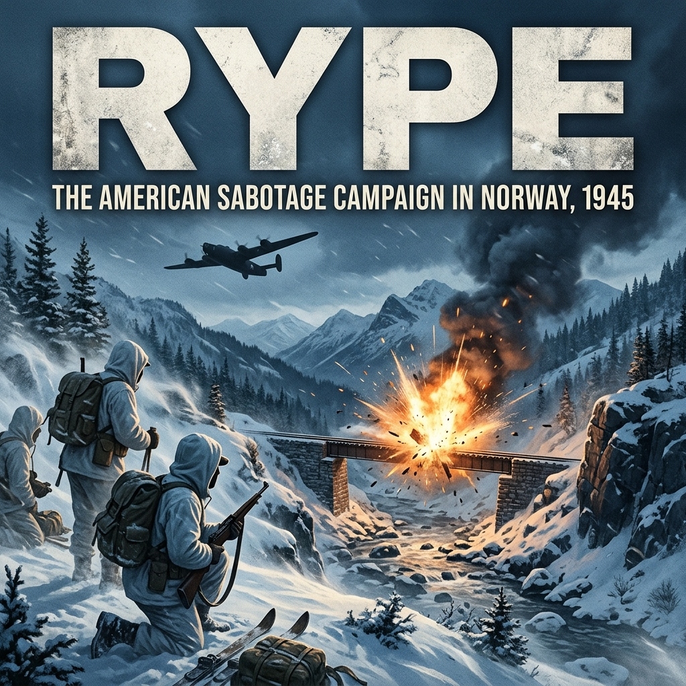

The freeze in Glenisla was clean, thin, and bitter. It rolled down off the barren granite slopes of the Grampian Mountains, cutting through the Scots pines and rattling the high sash windows of Dalnaglar Castle.
Dalnaglar was a Victorian baronial hunting lodge of rough-hewn stone and Gothic turrets, requisitioned by the British Special Operations Executive and designated by the Office of Strategic Services as Area P. For three months, it had served as the secret winter proving ground for the eighty-odd officers and enlisted men of the Norwegian Operational Group—NORSO.
In an unheated ground-floor study beneath a mounted stag’s head, Major William Egan Colby sat at a trestle table, his army overcoat buttoned to his chin. At twenty-five, Colby possessed the spare, slight build and quiet demeanor of a scholar. Behind wire-rimmed spectacles, his pale blue eyes moved methodically down the mimeographed pages of the detachment’s personnel rosters.
He was newly appointed to command. Behind him lay a successful Jedburgh guerrilla tour in occupied France, where he had coordinated maquis ambushes in the Haute-Loire. Before him sat a dossier of men who looked nothing like the French partisans he had left behind:
Nearly every man on the roster had followed the same improbable military route. They had been culled from the 99th Infantry Battalion (Separate), a unique unit authorized by the War Department in 1942 specifically to recruit native Norwegian speakers, merchant sailors stranded in American ports when the Wehrmacht invaded Norway, and second-generation immigrants from the timber camps and iron ranges of Minnesota, Wisconsin, and North Dakota.
From Camp Ripley, they had been sent to Camp Hale, Colorado, training at ten thousand feet alongside the 10th Mountain Division. They had learned winter endurance, climbing high granite passes with eighty-pound rucksacks and running cross-country ski trails in sub-zero blizzards. When the OSS required specialized ski commandos for Scandinavian sabotage, it had drawn the top tier of the 99th, sending them first to Area F at the Congressional Country Club outside Washington and Area B in Virginia for training in silent killing, railway demolition, and the British B-Mark II wireless.
By late 1944, they had crossed the Atlantic to Scotland, divided into two field units—NORSO I and NORSO II—waiting for a theater of operations that seemed perpetually out of reach.
A firm, double rap struck the heavy oak door.
"Enter," Colby said.
First Lieutenant Blaine Jones stepped across the threshold, his wool overseas cap tucked under his arm. Behind him was Technical Sergeant Leif Oistad. Oistad was broad-chested and square-jawed, his face lined by two years in the North Atlantic merchant marine before enlisting in Minneapolis.
"Major," Jones said, coming to attention.
"Lieutenant. Sergeant Oistad. Close the door and take a seat," Colby said, gesturing to the two straight-backed wooden chairs opposite the table. "Did the morning weapons inspection finish?"
"Finished at noon, sir," Jones said, sitting down. "The ordnance crates from Special Operations Headquarters arrived by lorry from Glasgow last night. We unpacked the winter skis and the demolition kits."
"And?" Colby asked.
Jones looked at Oistad, who leaned forward, resting his forearms against his knees.
"The skis are good," Oistad said. His English was fluent, carrying the flat, measured vowels of the Upper Midwest over an underlying Norwegian cadence. "Norwegian hickory, steel edges, solid timber. But the harness bindings are mixed. Half came with steel heel cables; the other half came with old canvas toe straps meant for civilian cross-country touring. If a man drops into five feet of soft snow with an eighty-pound rucksack and tries to turn on canvas straps, the leather tears out at the heel. We’ll have men with broken ankles before they clear the landing zone."
Colby’s mechanical pencil made a precise, neat notation on a yellow legal pad. "Separate every pair with canvas harness. I want a formal requisition drawn up for SOE supplies in London. Steel cables only. What about the explosives?"
"Composition C-2," Oistad said. "Four thousand pounds of the plastic compound, packed in one-pound blocks. Detonating cord and electric blasting caps look clean. But the time-pencils are the British L-Delay type. The acid vials."
Colby looked up from his pad. "What is the problem with the L-Delays?"
"They’re calibrated for temperatures above freezing, sir," Oistad said flatly. "In Colorado, we tested chemical delays in the snow. When the temperature drops below zero, the acid thickens. The reaction slows to a crawl. A six-hour pencil can take twelve hours to eat through the safety wire—or it sits frozen solid until the sun warms the copper casing the next morning. If we place charges on a railway span at midnight expecting a blast before dawn, the patrol walks over it at eight in the morning, disarms the caps, and follows our ski tracks."
"We will test every batch in the ice shed behind the stables," Colby said. "Any lot that fails to fire within ten percent of its stamped time gets marked for daylight manual priming only. We do not gamble our timing on unverified chemical switches."
"Understood, sir," Jones said. He shifted slightly in his chair. "The men are tracking the wireless reports from the Continent. The regular 99th is pushing through Belgium right now. Took heavy casualties during the German offensive in the Ardennes around Malmedy. The replacements coming through Glasgow are full of talk about the fighting. Our people are getting sour, Major. They feel like they’re running ski drills in the Grampians while the rest of their battalion is fighting the war."
Colby closed the folder on his desk and laid his pencil down parallel to the paper’s edge. His voice was low, devoid of drama, carrying the cool detachment of his legal training.
"The 99th is doing standard infantry work on a crowded front," Colby said. "NORSO’s mission is entirely separate. London and Washington have been negotiating the theater boundaries for three months. That phase is over."
Jones’s eyes sharpened. "We have an operational mandate?"
"We do," Colby said. "General Franz Böhme’s Twentieth Mountain Army is retreating out of northern Norway. Over a hundred and fifty thousand German combat troops, pulled back from Finland and the Arctic front. Berlin wants them moved south to man the Rhine defenses and shore up the Reich."
"The railway," Oistad muttered, his eyes narrowing.
"The Nordland Line," Colby said, turning his notepad slightly. "One single track running through the mountains of Nord-Trøndelag. If the Germans keep that line open, they can feed two divisions a week into the ports at Oslo and ship them across to the Continent. If we cut it—if we drop into the fells, blow the bridges, tear out the rails, and hold the passes—those divisions stay stranded north of Trondheim."
"That’s a deep penetration, sir," Jones said quietly. "Seven hundred miles from the nearest Allied airfield."
"We fly out of Harrington with the Carpetbaggers," Colby replied. "Black Liberators, night insertion, no fighter escort. We drop on the high frozen lakes east of Snåsa, link up with the local resistance, and hit the rail line before the spring thaw breaks up the snowpack."
He stood up, signaling the end of the meeting. Jones and Oistad snapped to their feet.
"Sergeant Oistad, supervise the ski binding swaps personally. Have Sergeant Mork inspect every M1 carbine and Grease Gun. Strip the factory oil from the bolts and re-grease with kerosene and powdered graphite. I want those actions dry enough to cycle in forty-below weather."
"Yes, sir," Oistad said.
"Lieutenant Jones, assemble the section leaders at eighteen-hundred hours for terrain familiarization. I am leaving for Special Forces Headquarters in London on the night train from Edinburgh to receive the final operational annex."
Colby stepped toward the tall window, watching a squad of NORSO ski troops in white camouflage parkas double-time across the frosted heather of the glen, their heavy packs shifting in unison against the gray Scottish sky.
The months of training were over. The operational order was waiting at Grosvenor Street.
The black Austin sedan carrying Colby cut through the gray smog of London, its headlamps masked with slotted wartime blackout hoods that cast narrow slits of pale amber across the wet asphalt.
The city was battered, hollowed out by the winter of V-2 rocket strikes. At corners where Victorian townhouses had stood months before, there were only cordoned-off piles of brick rubble and the stink of ruptured sewer mains. Colby sat in the back with his briefcase flat across his knees, watching the quiet, rain-slicked streets slide past until the driver turned into Mayfair and pulled to the curb outside 70 Grosvenor Street.
This was the European Theater headquarters of the Office of Strategic Services. Marine guards in dress blues checked Colby’s identity card, logged his arrival, and escorted him past the cipher rooms up to the upper floors where the Special Operations (SO) branch coordinated with British Special Forces Headquarters (SFHQ) at Baker Street.
In the corner conference room overlooking the square, the air was thick with the scent of Virginia tobacco and damp wool coats. Behind a long mahogany table sat the men who held Colby’s operational leash: Colonel Joseph F. Haskell, head of OSS Special Operations in the ETO, accompanied by two liaison officers from the Norwegian High Command (Forsvarets Overkommando, FO.IV)—Major Leif Tronstad’s staff, men who had planned the Vemork heavy water raids—and Colonel J.S. Wilson of the British SOE Scandinavian section.
A large operational map of Northern Europe was pinned to the felt board, its surface covered in red grease-pencil arrows converging on the Danish straits.
"Sit down, Bill," Colonel Haskell said, gesturing with a lit cigarette toward an empty wooden armchair. "The directive came across the wire from General Donovan’s desk in Washington this morning. It carries SHAEF’s highest operational priority for the northern theater."
Colby removed his wet trench coat, laid it across the back of the chair, and sat down. He pulled a fresh legal pad and a sharpened mechanical pencil from his briefcase. "I'm listening, Colonel."
Haskell tapped the ash into a brass shell-casing ashtray. "General Franz Böhme’s Twentieth Mountain Army has completed its evacuation from the Arctic. Operation Nordlicht pulled them clean out of the Lyngen line. Right now, there are nearly two hundred thousand German troops bottled up in Norway. Half of them are first-rate mountain and ski divisions—Third Mountain, Sixth Mountain, veterans from the Murmansk front. With the Russian advance halting on the Oder and the Rhine bridges under pressure, Berlin is desperate to get those men to Germany."
One of the Norwegian officers, a thin captain named Sønsteby who wore British battle dress with Norge shoulder titles, stood up and stepped to the map. He tapped the black line running north-south through the narrow waist of Norway.
"They cannot move them by sea," the Norwegian said in sharp, precise English. "The Royal Navy and RAF Coastal Command have effectively closed the Skagerrak and Kattegat. German convoys leaving Narvik and Bodø are being hunted down by torpedo bombers. That leaves one single transit trunk: the Nordland Line."
Colby’s eyes fixed on the rail corridor. "Single track the entire way through Trøndelag."
"Single track," the Norwegian captain confirmed. "Standard gauge. Running from the port at Mosjøen down through Grong, Snåsa, Steinkjer, and into Trondheim. From Trondheim, they have dual-track clearance south toward Oslo. If the Germans maintain rail integrity, they can push two full divisions a week down that line, load them onto troopships in the Oslofjord under Luftwaffe shore-battery umbrellas, and land them in Jutland or the Baltic ports within thirty-six hours."
Haskell leaned across the table. "Donovan had dinner with Eisenhower at SHAEF forward headquarters three nights ago. Eisenhower’s words were explicit: every German division we pin down in Scandinavia is a division our armies don't have to kill on the Elbe. That is your mission, Bill. You are to take NORSO into the mountains of Nord-Trøndelag, establish contact with Milorg District 21, and sever the Nordland Line."
"What are the specific targets?" Colby asked, his pencil poised.
"SFHQ has designated the operation code name: Rype," Haskell said. "Norwegian for ptarmigan. Your primary target is the Grana Bridge south of Snåsa. It is an eighty-meter steel span over a sheer gorge. If you drop that span into the riverbed, the Germans cannot bridge it with field gear. It will choke all rail transit from the north for at least six to eight months."
Colby noted the name: Grana Bru. "What is the garrison strength around the bridge?"
The Norwegian captain hesitated, looking down at an intelligence file stamped SECRET - SFHQ 21. "Reconnaissance from Milorg’s Woodlark team indicates at least a platoon of Wehrmacht railway guards, fortified in reinforced concrete pillboxes on both bridgeheads. Machine-gun nests covering the approaches, barbed-wire aprons, and searchlights tied to diesel generators. In addition, there is a company-strength reaction force billeted in Snåsa village, six miles to the west, equipped with rail-trolleys and tracked snow tractors."
Colby’s pencil did not move. He looked up at the Norwegian, his eyes cool behind his spectacles. "You want thirty-two Americans on cross-country skis to assault a fortified, wired, and lighted bridgehead held by an entrenched platoon with an infantry company in immediate reserve?"
"The bridge must be dropped, Major," Haskell said quietly. "If the primary target is impenetrable, your alternate is the Tangen Bridge, or the open rail curves in the Lurudalen valley. But the mandate is disruption. Total, prolonged paralysis of the rail net."
"And the drop zone?" Colby asked.
"Lake Snåsa or the high frozen lakes east toward the Swedish frontier," Haskell replied. "The British had an SOE team—Operation Woodlark, led by Herbert Helgesen—operating in the hills east of Snåsa since late 1943. They will provide the reception committee. They have agreed to lay out the Eureka radar beacon and signal fires on the ice."
Colby tapped his pencil against the pad. "What about the Swedish border? If my men are cut off or heavily wounded, what are the rules of engagement regarding Sweden?"
Haskell frowned slightly. "Officially, Sweden is neutral. If you cross the border in uniform carrying arms, the Swedish military is obligated by international law to intern you for the duration of the war. Unofficially, the Swedish police and intelligence officers along the Jämtland border are sympathetic. Some of our couriers use their border posts as mail drops. But do not rely on it. If you step into Sweden, you are out of the fight."
"Understood," Colby said. "Who is flying us?"
"The 492nd Bombardment Group," Haskell said, standing to indicate the briefing was nearing its end. "The Carpetbaggers. They’ve moved a special operations detachment to Harrington Airfield in Northamptonshire. Colonel Clifford Heflin’s people. They fly stripped-down B-24 Liberators painted matte-black, fitted with Rebecca homing gear to pick up Helgesen’s Eureka beacon."
Colby closed his pad and stood up, fastening his service jacket. "How many aircraft?"
"Eight Liberators," Haskell said. "Four for your personnel stick—thirty-five men total, including your medical and communications details. Four for equipment: supply canisters, weapons, skis, plastic explosives, and field rations. You move your men from Milton Hall to RAF Harrington tomorrow morning."
Colby picked up his briefcase. "And the weather forecast for the North Sea?"
Haskell’s face settled into hard, lines of fatigue. "Disastrous, as usual. A cold front is moving in from Iceland. Gale-force winds, low-level cloud over the Norwegian coast, and blinding snow squalls across the interior fells. But the calendar is against us, Bill. If we wait for clear spring skies, the snow will melt, the ice on the drop lakes will break up, and your men won't be able to move twenty miles on skis without sinking to their waists in muskeg."
"Then we go in the dark," Colby said.
Haskell extended his hand across the table. "Donovan is watching this one personally. The 99th Battalion has made a great deal of noise about its heritage. Now we see what they can do when there is no frontline behind them."
Colby shook the colonel’s hand with a firm, unhurried grip. "They know how to handle the cold, Colonel. My only concern is whether the Air Corps can find the right lake in the dark."
Twenty minutes later, Colby was back in the sedan heading north toward Milton Hall. The London drizzle beat a steady, monotonous rhythm against the glass, and in his briefcase, the stamped operational orders for Operation Rype lay beside the list of broken ski bindings and frozen time-pencils that his sergeants were still trying to replace before morning.
The convoy of olive-drab canvas GMC six-by-six trucks turned off the narrow country lane and rattled through the guarded perimeter gate of Station 179. A wooden signboard, blackened by rain and exhaust soot, marked the boundary: USAAF Station 179 – Harrington.
To the passing eye, Harrington looked like any of the dozens of heavy bomber installations carved out of the Northamptonshire farmland. But beneath the routine exterior, it operated under a different protocol. The runways were long concrete ribbons flanked by low Nissen huts, dispersal pens, and towering green blister hangars. Stationed here were the men of the 856th and 858th Bombardment Squadrons of the 492nd Bombardment Group—the secret air wing known throughout the European Theater simply as the Carpetbaggers.
Colby stepped down from the cab of the lead truck into the cold wind blowing across the tarmac. Lieutenant Jones and Sergeant Oistad were already dropping the tailgates of the trucks behind him, where thirty-four men of NORSO, bundled in heavy wool overcoats and knit watch caps, began unloading duffel bags, crates of ski wax, and wooden weapons chests.
Walking toward them across the oily concrete was a USAAF captain in a sheepskin B-3 flight jacket, an unlit cigar clamped between his teeth.
"Major Colby?" the pilot asked, extending a gloved hand. "Captain Robert Sullivan. 856th. Colonel Heflin told us to expect your outfit."
"Captain," Colby said, shaking hands. "Where are the ships?"
"Hardstands four through twelve," Sullivan said, turning to walk with him down the taxiway. "Maintenance crews have been on them for forty-eight hours straight. If you've never flown with the Carpetbaggers before, you'll find our Liberators aren't standard Eighth Air Force issue."
As they rounded the high earthen revetment of the first dispersal pad, Colby got his first look at the aircraft that would carry them across the North Sea.
The Consolidated B-24 Liberator sat low on its tricycle landing gear, but its familiar outline was radically altered. The olive-drab and gray camouflage of standard USAAF bombers had been scrubbed and replaced with an unreflective, velvet-like matte black paint—a formula designed to absorb German anti-aircraft searchlight beams.
Colby walked beneath the high shoulder wing, running his fingers along the fuselage. "Turrets are gone."
"Peeled right out," Sullivan said. "Top turret, belly ball turret, and the waist gun mounts. We stripped out armor plating, oxygen racks, and the heavy defensive gun systems. Every pound of steel we shed means another gallon of aviation fuel in the auxiliary tanks. Your round-trip to the Trøndelag interior and back to England is nearly two thousand miles. On winter fuel mixture, we’ll be flying on fumes when we hit the channel on the return leg."
"What about German night fighters?" Jones asked, joining them beneath the dark belly of the bomber.
"If a Messerschmitt 110 finds us over the Kattegat, we die," Sullivan replied without emotion. "We don't dogfight. We fly at five hundred feet over the water under German radar, climb through the fjords using dead reckoning, make the drop, and dive back to the deck. If we get bracketed by flak at Trondheim, the pilot ducks his head and prays the black paint does its job."
Colby ducked his head to peer up into the undercarriage. Where the belly turret had once swung in its motorized ring, there was now a round, gaping opening nearly four feet in diameter, rimmed with a smooth wooden collar.
"The Joe Hole," Sullivan said, pointing up with his cigar. "Your men don't jump out the waist windows or through the bomb bays. When the green light flashes, you sit on the rim, legs dangling into the slipstream, cross your arms over your reserve chute, and slide down into the dark. Static line hooks onto that steel cable running along the fuselage stringer."
Inside the adjacent open hangar, Sergeant Oistad and Sergeant Glen Mork were supervising the ground crews as they hauled the drop canisters onto hydraulic dollies.
These were British 'C' and 'H' type supply containers—long, cylindrical sheet-metal tubes packed with padding and fitted with parachutes at their tapered ends. Inside each tube were the vital organs of the mission: blocks of Composition C-2 plastic explosive molded around cardboard spacers, coils of yellow Primacord detonating fuse, boxes of British L-Delay time-pencils packed in cotton wool, M3 'Grease Guns' slathered in low-temperature cosmoline, waterproof battery packs, and cases of British-issue composite emergency field rations.
"Watch the tail assemblies on those canisters," Oistad barked in Norwegian to Corporal Knut Falck, who was steadying a heavy tube on the lift. "Forsiktig! If the release shackle catches on the bomb-bay racks, that canister hangs up in the bay door at eight hundred feet, and we spend our first morning in Norway looking for our winter sleeping bags in the tops of the pine trees."
"They're going on the shackles now, Sergeant," Falck answered in the same flat dialect, wiping grease from his knuckle. "Twelve canisters per cargo ship. Four cargo ships, four personnel ships. Thirty-two containers of explosives alone."
Colby stepped into the hangar, the sharp odor of high-octane gasoline and acetone lacquer hitting his nostrils. He approached a wooden crate resting on two sawhorses. Inside were the weapons his men would jump with: M1 carbines with folding wire paratrooper stocks, strapped securely into canvas griswold scabbards, and .45 ACP semi-automatic pistols in oiled leather holsters.
"Sergeant Mork," Colby said.
Glen Mork snapped around, his weathered, northern-plains face tightening to attention. "Sir."
"Have the armorer inspect the firing pins on every carbine and Thompson," Colby ordered. "Strip every drop of standard petroleum oil from the bolts. If they jump into a thirty-below-zero draft with standard American gun grease, those actions will seize solid on the first burst. Wash them down with pure kerosene and graphite powder. Nothing else."
"Already drawing the kerosene drums from the motor pool, Major," Mork said. "We saw what happened to the 99th's rifles at Camp Hale when the temperature dropped off the Continental Divide. We won't get caught dry."
Lieutenant Jones returned from the operations hut across the perimeter, clutching a yellow weather teletype form. His expression was grim.
"From Group Meteorology, Major," Jones said, handing the paper to Colby.
Colby read the typed lines under the cold glare of the hangar bulb:
Captain Sullivan looked over Colby's shoulder and gave a low whistle. "That's a dead front. If we take Liberators into that at two hundred feet over the water, our wings will pick up three inches of clear rime ice before we sight the Norwegian coast. We’d go into the sea like iron anvils."
Colby folded the weather report and tucked it neatly into his breast pocket.
"How long will the front hold, Captain?"
"Two days. Maybe five. Maybe a week," Sullivan said, shrugging his leather shoulders. "This is North Sea spring weather, Major. It sits off the coast of Bergen and doesn't budge until an Icelandic gale blows it into Russia."
Colby looked at the row of eight black Liberators lined up on the hardstand—silent, armored birds loaded to their limits with explosives, skis, and weapons, their propellers motionless against the damp gray sky.
Around them, his thirty-four soldiers stood on the concrete apron in their heavy coats, ready to board, waiting for an engine roar that would not come.
"Post guards on every loaded ship," Colby told Lieutenant Jones quietly. "Two-hour shifts. Rotate the men through the briefing huts to keep them warm. Maintain complete radio silence. Nobody leaves the perimeter of Station 179."
"And if the storm holds for two weeks, sir?" Jones asked.
"Then we wait two weeks," Colby said, turning toward the operations block. "The railroad isn't moving. But every day we sit on this runway, Böhme moves another train south."
For twelve days, time stopped at RAF Harrington.
The stasis was not a peaceful rest; it was an abrasive, exhausting cycle of false starts that ground the nerves of the detachment down to raw edges. The Carpetbagger staging protocol required the men to be placed on four-hour standby every afternoon at 1400 hours. This meant dressing for combat in the damp, freezing Nissen huts, adjusting three layers of wool undergarments, thick gabardine combat trousers, white windproof ski smocks, felt-lined winter boots, and the bulky web harness of the British-issue X-type parachute system.
Each man carried his emergency gear strapped to his torso: an escape purse containing gold sovereigns, Swedish kronor, and counterfeit German reichsmarks; a silk map of Central Scandinavia sewn into the lining of his jacket; Benzedrine alert tablets; water purification tablets; a Fairbairn-Sykes fighting knife; and a .45 automatic pistol lashed down with leather thongs.
On four separate nights between March 12 and March 22, the procedure went all the way to the aircraft.
The men would march out through the blackout curtains into the whistling wind, their boots crunching on the frozen cinders of the taxiway. They would climb the short aluminum ladders into the dark, gutted bellies of the B-24s, finding seats on wooden benches bolted to the floorboards along the fuselage ribs. The bomb bays beneath them were sealed shut, jammed tight with drop canisters; behind their backs, the Joe Hole opened into black space, covered by a temporary plywood hatch.
Then the four Pratt & Whitney R-1830 radial engines would turn over, coughing out thick clouds of blue exhaust smoke that blew back into the open hatches, before settling into a deafening, vibrating roar that shook the aluminum skin against their shoulders.
They would taxi out to the perimeter track, engines idling, cabin air turning freezing cold as the wind ripped through uninsulated seams.
And then they would sit.
Inside aircraft 42-40549—a veteran ship named "Cookie"—First Lieutenant Blaine Jones sat near the hatch with Technical Sergeant Leif Oistad. Their breath plumed white in the red glow of the cabin night-light. Across the aisle, Corporal Knut Falck had his head resting against the cold bulkhead, his eyes closed, his fingers unconsciously running along the serrated safety clasp of his chest pack.
"How long we been idling?" Falck asked, his voice barely audible over the drone of the props.
"Forty minutes," Oistad said, checking the luminous dial of his Hamilton wrist watch. "Means the weather bird out of Leuchars hasn't sent a clear signal yet."
"My toes are already dead," Falck muttered. "If we sit another hour and then jump into Norway, I won't feel the skis hit the snow. I'll snap my ankles on the first drift."
"Keep flexing them inside the socks," Oistad ordered without looking up. "Heel to toe. Don't let the blood pool. If you go limp now, the frost gets in before you clear the door."
Up in the cockpit of the lead aircraft, Colby stood behind the pilot, Captain Sullivan, and the navigator. Through the Perspex windscreen, the runway lights were turned down to faint pinpricks of blue in the blackness. The propellers chopped the freezing air, throwing intermittent sheets of cold mist back across the glass.
The radio operator leaned forward from his bench, tapping Sullivan’s sheepskin shoulder. He passed a slip of paper scribbled in blue grease pencil.
Sullivan read it, cursed under his breath, and throttled the engines back to a low, sputtering idle. He turned his head to look at Colby.
"Ceiling dropped to two hundred feet over the Skagerrak," Sullivan shouted over the engine rumble. "Zero visibility at the Trondheim approaches. Freezing drizzle all the way down to sea level. The RAF weather Mosquito reported heavy structural icing below five thousand."
Colby’s face remained expressionless. "We can't fly under it?"
"Under it means twenty feet off the wave tops in thirty-knot crosswinds," Sullivan said bluntly. "In the dark, without radar altimeters calibrated to salt spray, one downdraft and we put eighty tons of aluminum and eight sticks of men into the ocean. Control just fired the red flare from the tower."
Sullivan clicked his intercom switch: "All ships, this is Lead. Stand down. Cut engines. Return to hardstands."
The engines died one by one, their pitch winding down to an agonizing, metallic silence, replaced once more by the whistling of the Northamptonshire wind across the open cow pastures.
Inside the rear fuselage, the men let out a collective, ragged breath. It was the fourth time that week.
"Unclip," Jones said, unbuckling his chest strap with numb, stiff fingers. "Down the ladder. Watch your step on the cinders."
The men clambered down into the cold night air, shoulders slumping under the weight of eighty pounds of parachutes and emergency kit. They trudged back to the Nissen huts in silence, the mud sucking at their overshoes.
Inside the living quarters, the cast-iron stoves were cold, having burned through their meager ration of soft bituminous coal hours earlier. The air smelled of damp wool, sweat, and stale tobacco. Men stripped off their heavy jump harnesses, laying them carefully across wooden footlockers, and collapsed onto wire-spring bunks with their overcoats pulled over their blankets.
On the wooden table near the center of the hut, a half-finished game of cribbage sat untouched from three days before. Sergeant Glen Mork sat on the edge of his bunk with a whetstone, slowly working the edge of his pocketknife against the oilstone, the rhythmic scrape-scrape-scrape the only sound in the barracks.
"They're crossing the Rhine," Mork said suddenly into the silence.
Falck looked up from his cot. "Who?"
"Third Army. Ninth Army," Mork replied, not stopping his whetstone. "Heard it on the BBC set in the mess hall before we loaded up. Patton's tanks crossed at Oppenheim. Montgomery’s putting a million men across the north. The whole wretched front is moving east into Germany."
"And we're sitting in the mud in Kettering," Falck said bitterly, staring at the corrugated iron ceiling. "By the time we hit the Nordland Line, the Russians will be having lunch with Patton in Berlin, and the war will be done."
"The war won't be done in Norway," Oistad’s voice cut through the room like an axe. He was sitting on a wooden bench near the door, stripping down his M1 carbine, inspecting the bolt face by the light of a single bare bulb. "There are three hundred thousand Germans up there who haven't surrendered an inch of dirt. They have food. They have coal. They have ammunition. If the Reich folds in the south, they can dig into the fjords and hold out for two years as a mountain fortress."
He locked the carbine bolt home with a sharp, mechanical clack.
"Don't worry about missing the war, Corporal," Oistad added, looking Falck in the eye. "When you hit that snow, there will be plenty of Wehrmacht waiting for you."
The door of the hut swung open, letting in a gust of freezing night rain. Colby entered, shaking the drops from his officer's trench cap. The men moved to stand, but he held up a flat, gloved hand.
"At ease. Stay in your bunks."
Colby walked to the center of the room, standing beside the cold stove. His uniform was dry, his spectacles clean, his posture completely undisturbed by the fourth consecutive abortive mission.
"I just spoke with Group Operations," Colby said, his voice quiet, measured, and entirely steady. "A high-pressure system is tracking east from the Hebrides. The barometer is rising across the Norwegian Sea for the first time this month. The moon is entering its full phase. If the high holds for thirty-six hours, the cloud cover over Trøndelag will break on the evening of March twenty-fourth."
He looked around the circle of tired, tense faces.
"Check your ski bindings once more tomorrow morning. Inspect the safety pins on your reserve chutes. When we load up tomorrow night, we will not be taxiing back to the dispersal pen."
Colby turned and walked back into the rain, the heavy oak door clicking shut behind him, leaving the men of NORSO in the quiet room, listening to the rain turn slowly to sleet against the curved iron roof.
The dusk of March 24 came without rain.
Across the flat expanse of Station 179, the wind shifted out of the northwest—clean, thin, and carrying the dry, metallic chill of high-altitude frost. In the perimeter dispersal revetments, the ground crews of the 492nd Bombardment Group worked under hooded flashlights, pulling canvas covers from the pitot tubes and running final mechanical checks on the bomb-bay shackle releases.
At 1800 hours, the Harrington mess hall served the traditional combat meal: thick T-bone steaks, fried potatoes, and white bread with real butter. To the men of the Norwegian Operational Group, the spread was an unmistakable signal.
"The condemned man's dinner," Corporal Knut Falck murmured, prodding the steak on his tin tray with a fork.
Across the wooden trestle table, Technical Sergeant Leif Oistad ate methodically, cutting each piece of beef with deliberate care. "Eat every ounce of the fat," he said without looking up. "Tomorrow morning you won't have a stove, and pemmican tastes like rancid tallow mixed with wood chips. You’ll want the calories in your blood when you’re standing in four feet of snow."
By 1930, the briefing room in the operations block was secured from the inside. Colby stood near the front projection screen alongside Captain Robert Sullivan and the flight echelon commanders. Thirty-five NORSO operatives sat in tiered rows, their faces pale under the yellow glare of the incandescent bulbs.
The intelligence officer traced a white grease-pencil line across the aeronautical chart.
"Takeoff commences at twenty-hundred hours," the officer announced. "Staggered intervals of three minutes between ships. Eight aircraft total. Four personnel ships carrying thirty-five operatives divided into small sticks of four to five men each; four cargo ships carrying thirty-two drop canisters packed with explosives, weapons, and winter subsistence. Route of flight: direct heading north-northeast out of Harrington, crossing the English coast at the Wash. Out over the North Sea, maintaining an altitude of five hundred feet to stay under the German coastal radar installations at Stavanger and Lista."
He tapped a point eighty miles off the Norwegian coast.
"At Point Baker, you turn inland, crossing the coast south of the Namsos fjord. You will climb through the mountain gaps to three thousand feet. The primary Drop Zone is the frozen surface of Lake Snåsa; the alternate is Lake Gjefsjøen, fifteen miles to the southeast near the Swedish frontier. Herbert Helgesen’s Woodlark team will have the Eureka radar beacon transmitting on frequency Able. When the lead aircraft picks up the transponder pulse, the reception committee on the ice will ignite five petrol fires in the shape of a letter 'T'."
Captain Sullivan stepped forward, his sheepskin B-3 jacket open at the collar. "If coastal flak boats engage with twenty-millimeter, we do not scatter. We maintain course. The jumpmaster will give the warning bell three minutes out. When the red light turns green, you go through the Joe Hole in rapid succession—one man every two seconds. We drop at four hundred feet above ground level to keep your descent time under twenty seconds. If you drift into the timber line, cross your forearms over your face and let the pine branches take the shock."
Colby stepped to the lectern. He carried no notes, his wire-rimmed glasses catching the harsh ceiling light.
"Every stick leader knows his coordinates," Colby said, his voice flat, precise, and carrying clearly across the room. "If the aircraft are separated by weather, you do not wander. You assemble at the primary beacon on the lake. If there is no beacon, you navigate by compass to the alternate assembly point at the mountain farm at Gjefsjøen. You do not talk to locals unless accompanied by an officer or Sergeant Oistad. You do not light warming fires until the perimeter is secure. If captured, remember your standing under the Geneva Convention: you are United States Army personnel operating in uniform. State only your name, rank, and serial number."
He looked across the rows of quiet, hardened faces.
"Let’s go."
Outside, the blackout was absolute. Only tiny violet ground lamps marked the edge of the taxiway as Colby led his stick out to Sullivan’s lead Liberator.
Because of the heavy load of fuel and cargo canisters in the bomb bays, each aircraft carried only a small operational element. In Sullivan's ship, Colby boarded with just three other commandos.
They climbed the short aluminum ladder through the open Joe Hole, their heavy rucksacks, chest reserves, and canvas Griswold rifle scabbards scraping against the metal frame. Inside the stripped rear fuselage, the four men took their places on the wooden benches bolted against the ribs.
Sergeant Glen Mork hooked their static lines onto the overhead steel cable, testing the snap-shackles with a hard downward pull.
The ground crew secured the plywood hatch over the hole. The interior went black, save for the faint crimson glow of a single shielded night-light over the jump station.
Up forward, the inner port radial engine began to cough.
Chug. Chug. Bang.
A blast of blue exhaust flare lit up the frost-crusted waist window. The engine caught, settling into a deep, vibrating rumble. The remaining three engines fired in rapid sequence, their deafening drone vibrating up through the floorboards and rattling the teeth in the men's jaws.
At 2014 hours, Sullivan released the toe brakes.
The Liberator surged forward into the dark, rolling heavily down the concrete strip before lifting into the cold night sky. The violent shudder of the runway smoothed out as the landing gear retracted into the wings. Sullivan banked gently to the northeast, setting a course across the Wash.
Beneath them, the dark surface of the North Sea opened up—an endless, freezing void of gale-whipped water. Inside the unheated cabin, the temperature dropped rapidly below zero. Thick rime frost crept along the exposed aluminum stringers. The air grew thin and acrid, smelling of high-octane gasoline, cold hydraulic fluid, and the dry rubber of oxygen masks.
For three hours, the eight black Liberators flew into the northern latitudes, navigating by dead reckoning and compass headings, their radios locked in strict silence.
Up in the cockpit, the navigator stared fixedly into the amber sweep of the Rebecca radar receiver, searching for the first faint pulse from the Norwegian mountains.
Ahead of them, crossing the 60th parallel toward the coast, the clear, star-studded northern sky began to vanish. A towering wall of dense, freezing cloud—an unpredicted Arctic front sweeping down from the polar sea—rose up from the water, swallowing the horizon.
At five hundred feet above the gale-churned water, the Liberators struck the front.
It hit Sullivan’s lead aircraft not as a gradual fog, but as a solid wall of freezing cloud. The dark horizon vanished instantly. Violent updrafts seized the twenty-eight-ton bomber, slamming the airframe upward before dropping it into sickening pockets of low pressure that sent loose gear clattering against the aluminum ribs of the rear cabin.
Colby sat strapped to his bench in the red-lit darkness, his boots braced against the deck. The cabin was an icebox. The breath from his nostrils froze on his wool balaclava in brittle crusts. Beside him, three of his men sat with heads bowed, hands clamped tight over the canvas straps of their reserve parachutes, riding the bucking motion of the floor.
Up in the cockpit, the flight instruments were the only reality.
Sullivan fought the control yoke, his knuckles white inside his sheepskin gloves. The windscreen had turned completely opaque with rough, milky rime ice. On the high leading edges of the wings, the pneumatic de-icing boots pulsed methodically, cracking sheets of frost that tore away into the black slipstream with loud, metallic bangs.
The navigator, bent over his small illuminated table behind the cockpit bulkhead, tapped the cathode-ray tube of the Rebecca interrogator set.
The screen was dead.
Only a faint green horizontal baseline shimmered across the glass, without the sharp vertical spike that would indicate Herbert Helgesen’s Eureka transponder on the ground.
"Nothing on the beacon," the navigator yelled over the deafening scream of the superchargers. "We’re ten minutes past the coastal landfall at Vikna. Winds aloft must be clocking sixty knots out of the north. We’ve drifted twenty miles off our dead-reckoning course!"
"Climb for the passes!" Sullivan shouted back, shoving the throttles forward. The four radial engines strained, their roar deepening into a heavy, laboring vibration as the bomber climbed through the dense cloud soup toward four thousand feet to clear the jagged granite peaks of the coastal range.
Behind them in the formation, the scatter had already begun.
Flying without lights or inter-aircraft radio in the blind soup, the eight Liberators were on their own. Each pilot had strict orders: if the target zone could not be identified within twenty minutes of ETA, or if the Eureka beacon failed to answer, they were to abort and turn back. The round-trip flight had no margin for lingering. Every five minutes spent circling the snowbound mountains burned fuel that would be needed to reach the English coast.
Two hundred miles to the south, the pilot of the fourth personnel aircraft watched his engine cylinder-head temperatures spike as carburetor ice choked his fuel mixture. The port-outer engine backfired with a sharp crack that shook the wing. With zero visibility and the peaks of the central spine hidden in swirling squalls, he banked the heavy ship to the west, shedding altitude to find clear air over the ocean, heading back toward Harrington with his five-man stick still strapped to their benches.
Ten minutes later, three of the cargo ships carrying the vital equipment canisters—sleds, winter rations, and extra plastic explosive—followed suit. Their navigators, blinded by the storm and unable to pick up the transponder signal through the mountain passes, turned their black noses toward the North Sea, forced to carry their heavy bellies home.
In the sixth Liberator, disaster was taking a different form.
Aboard aircraft 42-50385, Technical Sergeant Leif Oistad sat in the waist with four NORSO operatives. The pilot had caught a violent jet of mountain wind sweeping across the crest of the border range, throwing the bomber far to the east of the Trøndelag interior.
In the cockpit, the navigator stared at the snowfields beneath an occasional, fleeting break in the cloud. He spotted the vast, frozen expanse of a long lake surrounded by dark pine forests. On his compass, the heading was true north-northwest, but the gale had pushed the ship thirty-five miles past the invisible international boundary.
The pilot believed he was over Lake Snåsa. He had no way of knowing that the ice sheet drifting four hundred feet beneath his bomb bays was Lake Landösjön—deep within the neutral Kingdom of Sweden.
"Stand by jump station!" the crew chief shouted into the rear cabin.
Oistad stood up, his canvas rifle scabbard bumping his hip. "Check static lines!" he bellowed in Norwegian. The four men behind him hooked their snap-shackles to the overhead cable and slapped each other's shoulders.
The warning bell sounded. The belly hatch fell open, revealing a rush of howling black wind and the pale, ghostly white of the frozen lake below.
The red light over the hole clicked off. The green light flared.
"Go! Go! Go!"
Oistad threw his legs into the void, crossed his arms over his chest, and was sucked down into the sub-zero blast. Four men tumbled into the slipstream behind him. The Liberator banked hard and climbed back into the clouds, leaving the five Americans floating under silk canopies toward Swedish snow, entirely severed from Colby’s command.
Meanwhile, back over Nord-Trøndelag, Captain Sullivan brought the lead aircraft through a sharp downdraft.
At three thousand feet, the dense overcast suddenly tore open. Below them, through a ragged hole in the gray cloud floor, the dark, irregular spine of the Norwegian interior was visible, illuminated by the pale wash of the full moon reflecting off miles of unbroken snow.
The navigator let out a sharp cry.
On the face of the Rebecca CRT, a distinct green pip flickered, died, and then flared steadily upward from the baseline.
"We have it!" the navigator shouted. "Signal Able! Bearing zero-eight-zero! Range seven miles!"
Sullivan banked the bomber sharply to the left, diving toward the gap in the clouds. Through the Perspex nose, the sweeping white expanse of the wilderness opened up.
Out on the ice of the frozen lake, four tiny points of fire flared against the snow, followed by a fifth—the unmistakable amber 'T' of the reception committee's petrol tins.
Sullivan reached above his head and yanked the jump-alarm handle.
In the rear cabin, the loud, mechanical clatter of the warning bell split the air. Colby was on his feet instantly. Behind him, his three stick members snapped their static lines to the cable, their fingers checking the heavy quick-release boxes on their chest harnesses.
The plywood hatch slid back.
The sub-zero wind screamed into the cabin, biting through Colby’s wool balaclava like needles of broken glass. Beneath him, four hundred feet down, the pale white expanse of Norway raced past in the moonlight.
The green light over the hole flashed on.
Colby did not hesitate. He placed his hands on the wooden rim, swung his heavy boots into the slipstream, and dropped through the floor of the world.
The roar of the four radial engines vanished the instant the static line snapped the pack open.
For two seconds, there was only the violent, deafening blast of the slipstream, tearing the breath from Colby’s throat and whipping the nylon risers taut. Then came the brutal deceleration—a five-G wrench that slammed the leg straps deep into the flesh of his thighs, driving the air from his lungs.
The parachute blossomed above him: an olive-drab silk canopy, thirty feet across, humming in the Arctic night.
Silence rushed in to replace the mechanical fury of the Liberator. It was a vast, primeval silence, broken only by the faint whistle of mountain wind cutting through the suspension lines. Four hundred feet below, the landscape spread out in stark monochrome under the cold radiance of the full moon.
Beneath his swinging boots lay Lake Gjefsjøen—a frozen sheet of white stretching six miles long, hemmed in by the jagged, dark shoulders of the Skjækerfjellene mountains. At the northern end of the lake, five metal petrol cans blazed in a clear 'T', yellow plumes of fire casting flickering orange ribbons across the snow crust.
Colby looked up, checking his canopy. The nylon was rigid and symmetrical, the 18-inch vent at the apex spilling air smoothly. He grasped the cotton web risers, hauling down on the front lines to spill wind and check the oscillation that threatened to pendulum him across the sky.
To his left and right, three other white canopies drifted down through the moonlight. Higher up, the dark silhouette of Sullivan’s B-24 was already banking sharply to the west, climbing back toward the cloud deck to begin its long, fuel-starved run back to England.
The snow came up fast.
In the flat, deceptive glow of the moon, depth perception collapsed. There was no texture to the white floor—only sudden, rushing brightness.
Colby clamped his knees and ankles together, toes pointed slightly down, elbows tucked into his ribs to protect the submachine gun slung across his chest.
Crack.
His boots punched through the frozen surface crust, plunging knee-deep into the dense, packed powder beneath. The impact drove his knees into his chest. He threw his right shoulder into the snow, executing a textbook roll, the cold powder driving into the collar of his windproof smock and packing into his nostrils and eyes.
The silk canopy collapsed downwind with a dry hiss, dragging him three yards across the slick crust before Colby punched the circular aluminum release box on his chest. The four harness straps sprang free instantly.
He rose to his knees, spitting snow. He drew the Colt .45 from the canvas holster at his hip, clicking the thumb safety off with a dull metallic snap.
The air was fifteen degrees below zero Fahrenheit. The moisture in his lungs burned with every breath, like inhaling crushed glass.
Around him, the vast expanse of the frozen lake lay motionless. A quarter-mile to the east, two more parachutes collapsed into the snowdrifts. From the distance came a muffled, guttural shout in Norwegian:
"Kom igjen! Hold sammen!"
Colby re-holstered the pistol, stood up, and brushed the packed snow from his wire-rimmed glasses. He sank to his hips in the drift. Every step was an agonizing struggle against the snowpack; without skis, a man was completely immobilized, an anchored target in the middle of a barren plain.
To the south, two other Liberators had made their runs across the mountain basin. In the moonlight, Colby saw the cargo chutes dropping: heavy, dark cylinders swinging under red, green, and yellow silk canopies.
Then came the impacts.
Unlike the men, who landed on the soft snowfields of the lake shore, the heavy supply containers drifted wide, caught by the mountain downdrafts spilling off the fells. Several containers struck the rock ledges of the timberline with dull, hollow thuds that echoed off the granite walls of the valley.
One five-hundred-pound metal container, carrying communications batteries and boxes of Composition C-2, plunged vertically through a patch of thin spring ice near the lake’s eastern channel. The ice shattered with a sound like a rifle shot. The container, dragged down by its sodden canvas harness, vanished into thirty feet of black, freezing water, leaving only a jagged hole and a dark circle of slush.
Colby waded through the drift toward the first collapsed canopy, unhooking his Griswold scabbard to pull his M1 carbine from its canvas sleeve.
Sergeant Glen Mork was already up, stomping the snow down with his heavy felt-lined boots, trying to untangle a pair of hickory skis from his drop pack.
"Major," Mork gasped, his chest heaving, steam pouring from his wool scarf. "You in one piece?"
"Intact," Colby said, scanning the dark perimeter of the forest line three hundred yards out. "Who else is down?"
"I saw Falck and Jensen hit the ice near the signal fires," Mork said, clicking his steel heel cables into the ski bindings with two sharp thuds. He bent down, adjusting the leather toe straps. "The third personnel ship must have dropped a mile up the valley. I heard their chutes snap in the timber."
"And the fourth ship?" Colby asked.
Mork looked around at the empty, silent sky above the high peaks. The low drone of aircraft engines had completely died away. Only the wind whistled through the dwarf birch along the shoreline.
"Nothing, sir," Mork said quietly. "Just three ships came through. Four if you count the cargo dropper that dumped the sleds into the trees."
Colby checked the luminous dial of his compass.
Out of thirty-five men, only a scattered handful were visible on the ice. Over half the force, along with dozens of critical supply canisters, was missing.
A hundred yards ahead, three dark figures on cross-country skis broke from the shadow of the spruce trees near the flaming petrol tins, moving rapidly toward them across the crust. They carried British Sten guns slung across their chests, their white hooded smocks blending into the moonlight.
Colby raised the carbine, thumbing the safety switch forward.
"Mork," Colby whispered. "Recognition signal."
The three skiers closed the distance with effortless, rhythmic strides, their ash poles stabbing into the crust and lifting without a sound. At fifty yards, the lead skier slowed, dropping into a low telemark crouch, the black barrel of his British Sten gun pointed directly at Colby’s chest.
Sergeant Mork stepped forward on his skis, his hands held clear of his weapon. He raised his right hand, thumb and forefinger extended, and called out the prearranged English challenge into the Arctic chill:
"King!"
The lead skier halted, his breath clouding thickly around his hood. For two seconds, there was only the hum of the wind over the frozen expanse of Lake Gjefsjøen.
Then came the countersign, spoken in accented, sharp English:
"Norway!"
Colby lowered the muzzle of his carbine. "Major Colby, United States Army. Norwegian Operational Group."
The lead skier drove his poles into the snow, kicked free of his bindings, and walked forward. He pushed back his white canvas hood. Beneath it was a lean, hollow-cheeked man in his late twenties, his dark eyes shadowed by exhaustion, a woolen watch cap pulled down over his ears. He wore a patched Norwegian civilian hunting tunic beneath an open British camouflage windcheater.
"Herbert Helgesen," the man said, extending a woolen mitten. "Kompani Linge. Operation Woodlark. Welcome to Nord-Trøndelag, Major."
Colby took the mitten in a firm grip. "Lieutenant Helgesen. We picked up your Eureka signal five minutes before the drop."
"The batteries barely held," Helgesen said in flat, unembellished English. "They have been in an unheated cache since January. We had to warm the cells inside our jackets against our bare skin for three hours to draw enough current to answer your ship's radar."
Helgesen turned to look across the wide moonlit ice sheet, where faint white figures were slowly congregating near the dying signal fires. His eyes narrowed.
"Is this the entire detachment?"
"No," Colby said. "We launched eight Liberators from Harrington. Four personnel ships, four cargo."
Helgesen’s jaw tightened. "I counted only three aircraft over the valley. One dropped you here. Two dropped sticks and containers along the eastern ridge toward Plukkutjønna. We heard a fourth pass far to the east, across the Swedish frontier, but it did not circle back."
Colby checked the luminous dial of his watch. It was 0120 hours. "The weather over the coast broke our formation. Four ships must have aborted and turned back for Scotland. That leaves us with three sticks on the ground."
"Sixteen men," Mork said, after counting the approaching shapes on the ice. "Sixteen out of thirty-five."
Helgesen cursed softly in Norwegian. "Sixteen men cannot assault the Grana Bridge, Major. The garrison there was reinforced last Thursday. The Germans brought in fifty railway guards from the Sicherungs-Regiment at Steinkjer. They have dug three new machine-gun emplacements into the rock above the gorge."
"We will evaluate the targets once the force is consolidated," Colby replied calmly. "Right now, the priority is clearing this lake. How far are the nearest German patrols?"
"The Wehrmacht station at Snåsa is twenty-five miles west through the mountains," Helgesen said, gesturing with his ski pole toward the jagged peaks. "Under normal conditions, two days on skis. But they have Fieseler Storch reconnaissance aircraft operating out of the airfield at Værnes. If the sun comes up and a German pilot spots silk canopies or supply crates on this open ice, we will have mountain troops dropped into Lurudalen before midday."
Colby turned to Mork. "Sergeant, assemble the stick. Get every man on skis. Move across the drop zone and collect every parachute. Roll them tight, bury them in deep snowdrifts along the tree line, and stomp the surface flat. Nothing white or silk remains exposed on the ice."
"What about the lost container in the channel, sir?" Mork asked. "The one that broke through the ice?"
"Leave it," Colby said without hesitation. "We don't have diving tackle, and we don't have time to fish through frozen slush. Mark the coordinates on your compass. We locate what landed on dry snow and drag it to shore."
The two other Norwegian resistance men from Woodlark had already begun kicking snow over the burning petrol cans, smothering the yellow fires until only thin wisps of acrid smoke rose into the moonlight.
Across the lake, the remaining twelve Americans had consolidated into two small patrols, dragging two heavy sheet-metal supply containers across the crust on canvas harnesses. Corporal Knut Falck skied up to Colby, his breath freezing against his eyebrows.
"Major," Falck said, leaning on his poles. "Lieutenant Jones isn't here. Neither is Sergeant Oistad."
"Where was Oistad's stick?" Colby asked.
"Aboard ship five," Falck replied. "The one that flew east. If they dropped, they're miles out of sector."
"We assume they are down until radio contact proves otherwise," Colby said. He turned back to Helgesen. "Lieutenant, where is our shelter?"
Helgesen pointed toward the eastern shore, where the dark silhouette of a small cluster of log structures nestled into the birch timber at the edge of the lake.
"Gjefsjøen," Helgesen said. "A remote mountain farm. No roads. No telegraph. The only link to civilization is a winter ski trail forty miles through the fells. The farmer is Allan Trøite. He and his family are loyal, but they have never seen thirty armed Americans arrive on their doorstep."
"Sixteen Americans," Colby corrected quietly. "Let's move."
The men clicked into their bindings, hoisted their seventy-pound rucksacks, and began the slow, rhythmic glide across the crusted surface of Lake Gjefsjøen. Behind them, the wind was already drifting fresh, powdery snow over their landing ruts, wiping the surface clean under the pale glare of the Arctic moon.
The five parachutes drifted down through the freezing dark at 0200 hours on March 25, collapsing onto the glare-ice of an unfamiliar lake.
Technical Sergeant Leif Oistad slammed into the hard surface, the steel crampons of his jump boots skidding ten feet before his knees caught the crust. He unclipped his harness, rolled clear, and came up with his M1 carbine gripped across his chest, the cocking handle pulled back a quarter-inch to verify a round was chambered in the receiver.
Around him on the ice, the other four men of the stick recovered their footing: Corporal Knut Andreasen, Technician Fifth Grade Tom Rusdal, Technician Fifth Grade Eddie Hovland, and Technician Fifth Grade Sivert Windh.
Fifty yards away, two supply canisters bounced heavily across the ice sheet, their cargo parachutes deflating in the wind.
The men stood back-to-back in a defensive ring, submachine guns and carbines leveled at the dark timber margins. The air was twenty below zero. There were no bonfires. No Eureka transponder chirped against an airborne receiver. Across the frozen expanse, the silence was vast and complete.
"Hovland, Andreasen, secure the drop canisters," Oistad whispered in Norwegian. "Keep low to the ice."
Windh, a broad-shouldered twenty-three-year-old born in Skåne who had crossed the Atlantic as a merchant seaman before enlisting in Minneapolis, skied in a tight circle, scanning the ridges surrounding the lake.
"Sergeant," Windh said, his voice tense. "The skyline doesn't match the aerial prints of Snåsa. There are no gorges to the south. The hills are too low, too flat."
"We stick to operational orders," Oistad said flatly. "We hold position on the ice until first light. If we wander into the timber in the dark without bearings, we risk running straight into a Wehrmacht outpost or breaking an ankle in deadfall."
For six agonizing hours, the five men endured the Arctic cold out on the exposed ice. They stacked the drop canisters as a low barrier against the wind, huddled together in their white windproof smocks, flexing their toes and fingers inside their mittens to ward off frostbite. They did not light a match. They did not speak above a murmur. They were deep in what they believed was occupied Trøndelag, surrounded by potential German garrisons.
Dawn broke around 0600, rolling a pale, gray light across the ice.
By 0900, the sun had burned through the mist, illuminating the shoreline. Two miles to the east, along the lakeside, sat a cluster of red-timbered farmhouses and a cleared dirt road. Telephone poles stretched in an unbroken line through the valley.
At 0930, Corporal Andreasen stiffened, his cheek pressed to the walnut stock of his carbine.
"Movement on the eastern bank," Andreasen said, his finger resting flat against the trigger guard. "Three... no, five men. Moving onto the ice."
Oistad brought his binoculars to his eyes. Through the lenses, he saw several men walking out from the shore toward the center of the lake. They wore civilian wool overcoats, dark caps, and boots. The man in the lead carried a walking staff.
"Rifles up," Oistad ordered in a cold whisper. "Kneel behind the canisters. Safeties off. If they're Wehrmacht scouts in civilian clothes, don't let them close within two hundred yards."
The five Americans dropped behind the metal containers, five weapon muzzles tracking the approaching figures across the white glare. Rusdal and Hovland thumbed the selectors of their Grease Guns to full auto with a sharp, oily clack.
The civilians walked on, completely unaware of the five loaded barrels leveled at their chests. At eighty yards, the crunch of their boots on the crust carried clearly across the freezing air.
The man in the lead was Herje Bromée, a local village constable (fjärdingsman). Behind him were four local farmers from the hamlet of Lien who had spotted the strange white bundles on the lake from their kitchen windows.
Bromée cupped his hands to his mouth, calling out across the snow in clear, unhurried Jämtland Swedish:
"Hallå därute! Vilka är ni? Behöver ni hjälp?" (Hello out there! Who are you? Do you need help?)
Behind the drop canister, Sivert Windh’s hands jerked against his carbine. His breath hitched.
"Hold fire!" Windh gasped, shoving Andreasen’s barrel toward the ice. "Don't shoot! Man! Don't shoot!"
Oistad’s eyes narrowed. "What are they shouting?"
"Swedish," Windh said, his face pale with sudden, staggering realization. "That's native Swedish. Not German. Not Norwegian. Jämtland dialect."
Windh stood up from behind the canisters, his hands raised high in the air, his white hood thrown back. He shouted across the ice in fluent Swedish:
"Vi är amerikanska soldater! Skjut inte! Var är vi?" (We are American soldiers! Don't shoot! Where are we?)
Out on the ice, Bromée and the farmers stopped dead in their tracks, staring in shock at the tall American rising from the snowbank.
Bromée took two cautious steps forward, lowering his walking staff. "Amerikaner? Ni är på Landösjön. I Sverige. Ni är i Offerdal." (Americans? You are on Lake Landösjön. In Sweden. You are in Offerdal.)
Windh lowered his arms and turned to Oistad, his voice shaking with disbelief.
"Sergeant... the plane missed the border completely. We’re in Sweden. Lake Landösjön. Forty miles behind the neutral line."
Oistad closed his eyes for a single second, the weight of the disaster settling into his chest. Then he stood up, slinging his carbine across his shoulder, followed by the rest of the stick.
Bromée and the villagers walked up to the Americans, staring wide-eyed at their white combat parkas, jump harnesses, and the heavy metal canisters packed with explosives.
"You dropped from the bombers last night?" Bromée asked, his eyes sweeping over the weapons. "You were seconds from shooting us."
"We thought you were Germans," Windh replied quietly in Swedish. "Our pilot made an error in the fog."
Bromée looked at the five exhausted, shivering soldiers. "You cannot stay on the ice. The wind will freeze you to the bone. Follow me to the village. We have alerted the landsfiskal in Krokom, but until he arrives, you must get inside."
Leaving their heavy containers on the ice under the guard of two villagers, the five Americans followed Bromée off the lake, their boots crunching on the packed snow of the road into Lien.
Bromée led them to the home of Sigrid Palm.
Inside the warm kitchen, the smell of woodsmoke and chicory coffee filled the room. Sigrid Palm, with her young daughter Sonja clinging to her apron, hastily laid out plates of dark rye bread, cheese, and salt butter on the scrubbed kitchen table.
The Americans sat down, the intense heat of the woodstove thawing their frozen faces into painful throbbing. They ate in near silence, their weapons stacked carefully in the corner of the entryway.
At noon, a black civilian sedan pulled into the yard, chains clinking against the snow-packed tires. Out stepped Landsfiskal Herje Skuncke, the regional magistrate.
Skuncke entered the kitchen, took off his hat, and looked at the five soldiers with grave, official formality.
"I am Landsfiskal Skuncke," he announced in Swedish, with Windh translating for Oistad. "By decree of the Royal Swedish Government, you are armed belligerents who have landed upon sovereign neutral soil. Your weapons, ammunition, and military equipment are hereby seized by the Swedish Armed Forces. You will be placed under protective military custody and transported to Östersund for formal processing."
Oistad stood up, looking the magistrate directly in the eyes.
"We understand your law, sir," Oistad said in steady, measured English. "We request immediate communication with the United States Military Attaché at the American Legation in Stockholm."
"The Legation has already been notified by telegraph," Skuncke replied. "Transport will arrive by evening to escort you south to the internment camp at Falun."
As the Swedish police began inventorying the weapons in the hallway, Oistad looked out the kitchen window toward the western mountains that loomed on the horizon—the jagged spine of the border where Colby and the rest of the detachment were now entirely on their own.
Dawn in the Snåsa mountains broke not with sunlight, but as a slow, cold silvering of the mist.
Through the birch thickets along the eastern bank of Lake Gjefsjøen, the log buildings of the farmstead emerged like dark, frost-encrusted monoliths. Gjefsjøen was one of the most isolated mountain settlements in central Norway: three rough-timbered structures—a main farmhouse (våningshuset), a log barn and cowshed (fjøset), and a raised storehouse (stabburet) resting on stone piers—situated forty miles from the nearest railway depot, accessible in winter only by ski trails across trackless alpine terrain.
Colby, Helgesen, and the sixteen Americans halted their skis at the tree line. The men stood leaning on their ash poles, their breath ragged and white against their smocks. Behind them, lashed to four canvas-and-timber pulks, lay the salvaged cargo: crates of Composition C-2, drums of kerosene, demolition wire, and three heavy British supply containers that had survived the drop without splitting.
Helgesen took off his skis and walked ahead through the drifts to the farmhouse porch. He knocked three times—a slow, measured rhythm—paused, and gave two rapid taps.
Inside, the low scrape of an iron latch broke the stillness. The heavy spruce door opened an inch, revealing the dark silhouette of a man holding an axe handle in the shadow of the frame.
"Herbert?" a man's voice whispered in Norwegian.
"It is me, Alfred," Helgesen answered softly. "Step back. We have friends from across the water."
The door swung open. Alfred Andersson stood on the threshold. Born on the Swedish side of the border before settling in the high Norwegian fells, he was a rugged, weathered man in his forties, known across the border mountains as Gjefsjø-Gubben. He wore homespun wool trousers tucked into greased leather lap-boots, his hair uncombed, his face lined with the pale shock of someone who had heard heavy aircraft engines circling low over his roof for the past three hours.
Behind him in the warm kitchen, lit by the yellow flame of a single kerosene lamp, stood his wife, Lena. She held their nine-month-old infant daughter, Anny, wrapped tightly in a thick wool blanket against her chest. Ten-year-old Nils—known to everyone as Nisse—stood pressed against his mother’s apron, his wide eyes fixed on the doorway.
Alfred looked past Helgesen’s shoulder. Out in the birch clearing, sixteen heavily armed American soldiers in white hooded camouflage smocks, carrying M1 carbines, Grease Guns, and rucksacks, began gliding out of the shadows toward his home.
Andersson swallowed hard, his knuckles white around the wood of the latch. "Herbert... good grief. How many did they drop?"
"Sixteen Americans," Helgesen said in a low voice. "The 99th Battalion."
Colby clicked out of his ski bindings and walked up the steps, his boots thumping against the scrubbed pine boards. He took off his woolen mitt and extended his hand.
"Major Colby, United States Army," he said in English.
Helgesen translated. Alfred Andersson took Colby’s hand. His grip was rough and calloused from a lifetime of felling timber and clearing mountain bogs, but cold.
"Come inside," Alfred muttered in Swedish-inflected Norwegian, stepping aside. "Quickly. Off the ice."
The men filed through the low entryway, ducking beneath the pine lintel. The heat of the cast-iron woodstove hit them like an open oven, carrying the thick smell of burning birch, cow manure, and boiled goat’s milk. The Americans moved carefully, aware of the heavy weapons slung across their chests, packing into the small timber parlor until their wet wool parkas brushed against the timber walls.
Lena Andersson backed slowly toward the woodstove, clutching baby Anny. Young Nisse peered out from behind her skirts, staring at the canvas jump boots and the blackened metal of the submachine guns.
Lena knew what the uniforms meant. Every household from Trondheim to the Swedish border had heard of the Kommando-Befehl—Hitler’s Commando Order of October 1942. Under the decree, Allied saboteurs were not prisoners of war; they were to be turned over immediately to the Sicherheitsdienst and shot without trial. Any civilian who harbored them, fed them, or failed to report their presence faced the same fate: the summary execution of the entire family and the burning of the homestead to the ground.
Corporal Knut Falck removed his watch cap, revealing his cropped blond hair, and spoke to Lena in the quiet, antique dialect of his immigrant parents:
"God dag, mor. Du trenger ikke være redd. Vi skal ikke gjøre dere noe vondt." (Good day, mother. You do not need to be afraid. We will not harm you.)
Lena stared at him, her lips parted. The sound of her native tongue spoken with the slow, archaic cadence of nineteenth-century emigrants seemed to shatter the immediate panic. She lowered the child slightly, her breath coming in ragged sighs.
"You speak Norwegian," she whispered.
"Most of us do," Falck said gently. "Our families came from the valleys."
Colby did not indulge in sentiment. He took off his snow-crusted gloves and turned to Helgesen and Alfred Andersson at the kitchen table.
"Mr. Andersson, we will not endanger your home any longer than is operationally necessary," Colby said, his voice flat, low, and procedural. "We need shelter to dry our equipment and an outbuilding to set up our radio transmitter. Where can we store the high explosives?"
Alfred looked at Helgesen, then back at Colby. The fear had not vanished, but it had calcified into the grim pragmatism of the mountain border.
"The stabbur," Alfred said, pointing through the window toward the raised two-story storehouse twenty paces from the house. "It is dry. It sits on stone pillars off the ground, so the damp does not get into the floor. You can put your wireless set in the upper loft. The explosives can go into the potato cellar under the barn."
"Are there any civilian tracks near the lake?" Colby asked.
"None in winter," Alfred replied. "No one comes here unless they are hunting ptarmigan or running the border trail from Sweden. But the German garrison at Snåsa sends ski patrols along the telegraph lines once a week. If a spotter plane flies along the lake and spots tracks in the yard, they will come."
Colby turned to Sergeant Glen Mork.
"Post two lookouts on the high rock outcrop north of the farm," Colby ordered. "Two-hour rotations. White parkas only. I want the pulks and supply containers unpacked within thirty minutes. Move all ammunition and C-2 into the barn cellar. Take spruce boughs and sweep out every ski track leading from the lake shore to the porch. If a plane flies overhead, this farm must look abandoned."
"Yes, sir," Mork said, motioning to Falck and four other men to follow him outside.
As the men went back into the freezing mist, Colby unbuttoned his field jacket and pulled his operational map from the waterproof pouch.
Beside him, Alfred Andersson stood watching his kitchen fill with American military gear—ammunition tins, field rations, and medical satchels stacked where sacks of rye flour normally rested. Lena sat by the hearth, rocking Anny in the dim glow of the fire while young Nisse watched the silent Americans from the corner of the room.
The sanctuary had been reached, but it was a trap of their own making. If the Germans came down from Snåsa, there was nowhere left to run.
The loft of the Gjefsjøen stabbur smelled of cured mutton, dried hay, and the sharp tang of ancient pine resin.
Set two feet above the deep snowdrifts on thick timber pilings capped with flat slate discs to keep out rodents, the storehouse was bone-dry and pitch-black. Wind whistled through the square-notched log corners, carrying gusts of powdery drift through the gaps in the timber.
Technician Børge Langeland knelt on a coarse wool blanket spread over the floorboards, shivering violently in his white smock. Before him sat the olive-drab metal suitcase of the British B-Mark II clandestine transceiver, its latches thrown open.
Beside the transceiver, a dry-cell battery pack sat wrapped inside a reindeer pelt to protect the lead-acid cells from freezing solid. Through a cracked pane in the loft’s narrow gable window, an insulated copper antenna wire snaked outside, strung fifty feet across the yard to the upper branches of a silver birch tree.
"Ground wire is pegged to the foundation rock," Sergeant Glen Mork whispered, ducking beneath the heavy roof truss. He held a hooded red flashlight pointed down at the wooden table. "How does the receiver sound, Langeland?"
Langeland pressed the hard bakelite earphone cups tight against his wool balaclava. With his right thumb and forefinger, he turned the brass tuning dial of the receiver, hunting for the designated crystal frequency.
Through the static hiss of the northern atmosphere, a faint, rhythmic whistle emerged: the call sign of Station 53b, the OSS signals depot at Grendon Underwood in Buckinghamshire.
"I have the home station," Langeland said, his voice trembling from the bitter draft. "Signal strength three. Heavy atmospheric fade off the mountains, but it's readable."
Colby climbed the wooden ladder through the floor hatch, his breath clouding thickly in the flashlight beam. He carried a small leather notebook and a strip of thin, rice-paper cipher sheet—a one-time pad that would be burned to ash the moment the transmission cleared.
"We have seven minutes on the air, Langeland," Colby said quietly. "Not a second more. The Abwehr listening post at Trondheim runs directional loop receivers on this sector. If we key the transmitter past eight minutes, they can fix a baseline bearing on Lake Gjefsjøen."
"Frequency is locked, Major," Langeland replied, gripping the spring-loaded brass Morse key. "Ready for text."
Colby read the enciphered five-letter code groups from the pad, his voice steady, monotonous, and precise:
Langeland's wrist moved with mechanical fluency. The Morse key clacked in the freezing quiet—dit-dit-dah-dit, dit-dah, dah-dah-dit—sending bursts of high-frequency pulses up through the copper aerial, over the rugged crest of the Skjækerfjellene, across the gray chop of the North Sea, and down into the radio masts in the English Midlands.
Colby stood motionless, watch in hand. Five minutes passed. The metallic rhythm of the key was the only sound against the groan of the timbers.
"Message cleared," Langeland murmured, flipping the toggle switch from SEND to RECEIVE.
For two minutes, there was only the cold roar of static in the headphones. Then Langeland stiffened. His left hand seized a stub of graphite pencil, scribbling frantic columns of numbers onto a pad of gridded paper.
Dah-dah-dit, dit-dit-dit, dah-dit-dah.
"They're sending priority code," Langeland whispered.
Colby took the pad as Langeland copied the final sequence. Using his code silk, Colby began peeling away the random additive numbers, translating the cypher into plain English:
Colby read the message twice. His spectacles reflected the red glow of the lens.
"Oistad dropped into Sweden," Mork muttered, shaking his head. "Good grief. Interned."
"At least they're alive," Colby said, folding the decoded paper. He pulled a brass Zippo lighter from his pocket, touched the flame to the edge of the rice paper, and watched the cipher crumble into black flakes on the stone sill of the window. He ground the soot to powder beneath his thumb.
"April six," Mork said. "That's nearly two weeks from now, Major. We’re sixteen men billeted in a civilian farmhouse forty miles from fifty thousand German troops, waiting on planes that failed us the first time."
"Then we wait," Colby replied, his voice unyielding. "We dig in. We cache the supplies in the woods, we establish our security ring, and we map the trail to Tangen."
Down below in the farmyard, the snow crunched sharply. Allan Trøite appeared at the bottom of the stabbur ladder, his wool coat dusted with fresh powder, his face gray with an unspoken dread.
Colby looked down through the square hatch. "What is it, Mr. Trøite?"
"Milorg courier just arrived from Snåsa on skis," Allan whispered up into the dark. "The Gestapo in Steinkjer have heard the bombers. They know something came down in the fells."
The decision took less than five minutes.
In the kitchen of the farmhouse, the oil lamp flickered as the Milorg courier from Snåsa—his face red and wind-scoured from forty miles of cross-country skiing—gulped down cold skimmed milk from an enamel mug.
"The German Kommandantur in Steinkjer registered the engine noise between one and two in the morning," the courier told Helgesen in low, urgent Norwegian. "They know the flight paths crossed the Snåsafjell. The Gestapo thinks it was either a supply drop for the underground or weapons for the northern districts. They’ve placed the railway guards at Jørstad and Grong on alert, and Henry Rinnan’s informants in Steinkjer have begun sniffing around the timber stations."
Alfred Andersson stood motionless by the window, his hand resting flat against the pine sill. Across the room, Lena held nine-month-old Anny bundled in a woolen shawl, while ten-year-old Nisse stood near the stove, his eyes darting between the armed Americans and his father. The neighboring croft at Gjefsjø Vestre had already been evacuated earlier in the winter, leaving the Andersson homestead as the sole populated outpost on the lake.
"If a German patrol comes up from the valley," Alfred said in his gravelly, border-inflected voice, "they will find the ski tracks. You can sweep the yard twenty times, but the snow crust settles differently where thirty men have walked. A Lapp tracker will spot it from two hundred yards."
Colby stepped into the kitchen, having climbed down from the radio loft in the stabbur. He listened to Helgesen’s translation, his expression calm and unreadable behind his spectacles.
"He is right," Colby said to Helgesen. "The moment we lit the signal fires on the ice, this farm became an Allied combat station. Under the Kommando-Befehl, our presence here is a death sentence for this family. They cannot stay."
Helgesen looked at Alfred. "You have to take Lena and the children east. Across the border."
The Swedish frontier lay only a few miles through the mountain passes—a trackless expanse of dwarf birch, frozen peat bogs, and wind-scoured ridges. To Alfred, born on the Swedish side of the mountains, the terrain was familiar ground, but crossing high alpine passes with an infant and a ten-year-old in sub-zero winds was an ordeal where a broken binding meant freezing in the drifts.
Alfred did not argue. The frontier had taught him the hard math of survival. He nodded once, turned to Lena, and spoke with calm, quiet authority:
"Pakk det mest nødvendige, Lena. Vi drar i kveld." (Pack what is most necessary, Lena. We leave tonight.)
Lena moved through the bedroom with deliberate speed, pulling thick woolen sweaters, heavy hand-knit stockings, and sheepskin blankets from the chest.
Alfred went out to the barn. He returned dragging a light wooden sledge—a mountain pulk of bent birch. Inside it, he laid thick reindeer pelts with the hollow hair facing inward to trap body heat, followed by an oilcloth tarp to keep out the blowing spindrift. Nine-month-old Anny was placed into the center of the furs, bundled so tightly that only her small face showed against the lambskin collar.
Ten-year-old Nisse strapped on his small hickory skis, tightening the toe irons with cold, steady fingers.
Colby reached into his musette bag, pulling out his waterproof escape pouch alongside several tins of field rations.
"We will look after the farm, Mr. Andersson," Colby said, meeting the farmer's eyes. "Our radio operator will notify the American Legation in Stockholm through London. When you reach Sweden, the authorities will provide shelter and funds for your family."
Alfred looked down at the tins of C-ration chopped ham and eggs Colby placed on the table. He took them, slipping them into his rucksack, but waved his hand at the British gold sovereigns Colby offered.
"Keep the gold, Major," Alfred said in Swedish-Norwegian. "If a patrol stops me with Allied escape coins, I am dead before I can speak. The American Legation can settle it when we get across."
He looked toward the cowshed through the frost-rimmed glass.
"Look after the cattle, Herbert," Alfred said to Helgesen. "There is dry hay in the upper barn loft. Give them water twice a day. If you run out of food... slaughter one of the cows for meat. But keep the red milker alive if you can."
"I will see to the animals myself, Alfred," Helgesen answered. "You have my word."
By 2130 hours, darkness had settled deep over Lake Gjefsjøen. The wind off the fells had begun to rise, driving snakes of dry powder across the yard.
On the porch, Alfred looped the canvas pulling harness of the pulk across his broad shoulders, testing the towline with two sharp tugs. Lena adjusted her rucksack, ash ski poles gripped in heavy mittens. Nisse stood between them on his skis, his woolen watch cap pulled down over his ears.
Colby, Helgesen, and Sergeant Glen Mork stood on the porch in their white camouflage smocks, watching the family prepare to depart into the night.
Alfred turned his back to the wind, leaned into his ski poles, and pushed out into the white waste. Lena followed directly in his ski tracks, with young Nisse gliding smoothly beside the pulk. The sledge moved almost silently across the crust, carrying nine-month-old Anny into the vast mountain darkness toward Sweden.
Colby watched them until the blowing spindrift swallowed the small silhouettes completely.
He turned back toward the warm kitchen. The house was dead quiet now, save for the ticking of the grandfather clock and the crackle of birch logs in the stove.
The Anderssons were gone. Gjefsjøen was no longer a civilian home. It was the operational fortress of sixteen isolated commandos, surrounded by snow, silence, and the gathering forces of the Wehrmacht.
The nine days between the Trøites' departure and the evening of April 6 were defined by the cold mechanics of concealment.
At Gjefsjøen, Colby established a rigid military perimeter. The sixteen Americans lived in shifts between the farmhouse kitchen and the outbuildings. Weapons were cleaned twice daily with kerosene to clear the microscopic ice crystals that formed inside the breeches. Lookout posts stood continuously on the granite bluff overlooking the southern approach, relieved every two hours to prevent the sentries’ feet from freezing inside their felt mukluks.
On April 5, the B-Mark II receiver in the stabbur loft crackled to life with the coded confirmation from London:
By 2200 hours on April 6, the mountain weather broke its promise.
A heavy, suffocating Arctic fog rolled off the high fells, pouring into the valley of Lake Gjefsjøen like cold, poured milk. It settled thick and impenetrable over the ice, erasing the horizon, the tree line, and the mountain shoulders. Visibility dropped to less than thirty paces. The air was dead, still, and eighteen degrees below zero.
Out on the frozen expanse of the lake, Colby, Herbert Helgesen, and eight NORSO men stood knee-deep in the crust. They had laid out five petrol-soaked piles of birch logs in the regulation 'T' formation, spaced fifty yards apart. Beside the base fire, Technician Børge Langeland knelt over the canvas satchel containing the Eureka radar transponder.
The transponder's lead-acid battery had been kept warm inside Langeland’s smock until the last possible minute. Its whip antenna reached up into the freezing gloom, pulsing its interrogation signal into the blind sky.
"Time is twenty-three fifteen," Sergeant Glen Mork muttered, checking his watch with a cupped flashlight. "They should be crossing the coast now."
Colby said nothing. He stood motionless on his skis, his hands thrust deep into the pockets of his white smock, his wire-rimmed spectacles fogging with every exhalation until he had to push them down his nose to scan the murk.
At 2340, Helgesen tilted his head. "Listen."
The Americans froze, holding their breath.
From the west, deep in the mountain passes toward Snåsa, came a faint, vibrating pulse. It was low, guttural, and unmistakable: the synchronized drone of sixteen Pratt & Whitney radial engines laboring against the thin mountain air.
"Aircraft," Mork whispered. "Four ships."
"Light the fires," Colby ordered.
Corporal Knut Falck and two men ran along the line with a petrol can and storm matches. One by one, the five piles erupted into roaring columns of orange flame, their heat hissing against the snow crust. But the heavy, freezing fog was like wet felt. Instead of casting tall beacons visible for ten miles across the fells, the flames were choked by the mist, transformed into dull, diffused halos of amber that barely illuminated the snow thirty yards away.
High above the cloud deck, the pitch of the engines altered.
The sound was erratic. It rose into a high, straining whine as the pilots throttled up to climb away from invisible rock walls, then deepened into a rumbling echo as they banked through the blind valleys.
"They're circling," Helgesen said, his voice tightening. "They're trapped between the ridges. The ceiling has dropped right down onto the tree line."
"Langeland, is the beacon taking an interrogation pulse?" Colby called out.
Langeland tapped the meter on the Eureka set. The needle wavered weakly, flickering in response to a faint airborne sweep, but failed to lock.
"They’re interrogating, Major," Langeland yelled over the hiss of the fires. "The Rebecca set in the lead ship is pinging us, but they're too high above the cloud, or the granite walls are blocking the side lobes! The signal is bouncing off the rock!"
Above them, the drone grew louder, directly overhead.
The Liberators were so low that the vibration rattled the ice sheet beneath the men’s boots. The roar seemed to come from everywhere and nowhere, bouncing off the sheer cliffs of the Skjækerfjellene, disorienting the men on the lake. The pilots were flying completely blind on instruments, four hundred feet above the terrain, hunting for five points of fire in a whiteout that swallowed every ray of light.
For forty-five agonizing minutes, the black bombers wheeled and groaned through the mist above the valley.
The men on the ice watched the sky with upturned faces, praying for a single break in the overcast—a momentary rift through which a pilot could sight the amber fires and trip the bomb-bay shackles.
None came.
At 0035, the tone of the engines shifted again. The heavy, surging roar leveled out into a continuous, receding drone heading southwest. The pilots, their fuel reserves eaten away by the low-altitude mountain hunting, were turning back toward the coast.
One by one, the sound of three aircraft died away into the distance, leaving only the whistling wind and the crackle of the dying birch logs.
"They're heading out," Mork said, his shoulders slumping. "They couldn't find us. They’re running for Scotland."
"Wait," Helgesen interrupted, raising a hand.
To the northeast, deep in the jagged massif toward Plukkutjønnfjellet, the sound of a single, fourth aircraft remained.
Its engines were not receding. It was low—dangerously low. The sound was an agonized, high-manifold shriek, echoing off the high granite walls as the pilot fought a violent mountain downdraft.
The roar swelled into a deafening crescendo that seemed to shake the spruce trees along the shore.
Then, abruptly, the engine noise stopped.
It did not fade. It was cut off clean, as if a switch had been thrown in the black sky.
Two seconds later, through the dense fog to the northeast, a dull, muffled thud rolled across the snowfields—a low, concussive vibration felt more in the soles of their boots than heard in the freezing air.
Then came total, absolute silence.
On the ice of Lake Gjefsjøen, the five signal fires sputtered and died down to smoldering black embers. The sixteen Americans stood in the freezing murk, their eyes fixed on the dark, invisible spine of the mountains, knowing with terrible certainty that one of the black ships had not made the turn home.
Inside Consolidated B-24 Liberator 42-40549, nicknamed "Cookie," the freezing darkness of the rear fuselage smelled of vomit, high-octane avgas, and cordite.
First Lieutenant Blaine Jones sat jammed against the cold aluminum stringers, his boots braced against the deck. The ship had been in violent turbulence for nearly an hour, caught in the rotor winds spilling off the jagged granite crests of the Trøndelag interior. Beside him sat three of his NORSO commandos: Technician Fourth Grade Kenneth S. Johnson, Technician Fifth Grade Leonard E. Shadle, and Corporal Eddie O. Hjelmvik.
All four men were suited in their heavy winter jump gear, Mae West flotation vests, reserve chutes, and canvas weapons scabbards. They had spent forty-five minutes hooked to the overhead static cable, waiting for the green jump light that never came.
Every few minutes, the floor would lurch sickeningly as the pilot pulled the twenty-eight-ton bomber into a hard, bank-and-climb, fighting downdrafts that threatened to slam them into unseen valley walls.
Up in the cockpit, First Lieutenant William F. Hudson fought the control column with both hands, his flight gloves soaked through with sweat despite the sub-zero draft whistling through the canopy seals. Beside him, Co-Pilot Second Lieutenant James H. Smedley kept his eyes glued to the gyro horizon and the altimeter.
"Altimeter reading four thousand two hundred!" Smedley shouted over the scream of the superchargers. "Barometric pressure is dropping like a stone out here! That needle could be off by three hundred feet!"
Hudson didn't answer. He couldn't afford to look away from the frosted windscreen. Outside, there was nothing—no stars, no horizon, only the blind, swirling milk of the Arctic blizzard. The matte-black paint on the nose was crusted with jagged ridges of clear rime ice. The wings were heavy, laboring under a load of frozen frost that the rubber de-icing boots could no longer completely crack free.
Behind the flight deck, the navigator tapped the amber CRT screen of the Rebecca radar interrogator.
"Lost the beacon again!" the navigator called out, his voice cracking with panic. "The signal bounced off a ridge and broke! We're blind, Hudson! Turn back! We're twenty minutes past our fuel safe-margin for the home leg!"
Hudson reached for the four throttles to pull back power and begin the turn south. "Setting heading two-two-zero," Hudson yelled. "Climbing to clear the—"
A violent gust of wind—a katabatic downdraft howling off the high alpine plateaus—struck the Liberator from above.
The heavy aircraft dropped like an elevator with severed cables, plummeting two hundred feet in three seconds.
Through the frosted windscreen, the whiteout momentarily tore open.
Right in front of the nose, rising out of the swirling snow like a black granite wall, loomed the razor-sharp crest of Plukkutjønnfjellet.
"Pull up!" Smedley screamed, his hands tearing at the controls. "Pull up! Pull—"
Hudson shoved the four throttles through the emergency war-power detents, the engines howling in mechanical agony as the propellers bit into the thin mountain air. The heavy nose rose toward the black sky, but with ice-crusted wings and twenty-four drop containers packed into the bomb bays, the bomber could not overcome the downdraft.
At 2355 hours, traveling at two hundred miles per hour, the belly of B-24 42-40549 struck the rocky ridge just below the summit.
The impact was instantaneous and total.
The aluminum skin peeled away like wet paper as the aircraft ploughed into the frozen granite and hard-packed permafrost. The twin rudders and tail section snapped off in the first fifty yards, tumbling end over end across the snowfield. The main wing spar shattered, rupturing the fuel cells. Hundreds of gallons of high-octane aviation fuel ignited in a massive, blinding flash of orange fire that lit up the fog for miles, followed by the secondary detonations of crates of Composition C-2 plastic explosive and mortar rounds packed in the belly containers.
The fuselage disintegrated into thousands of smoking, twisted fragments of metal, hurled across a quarter-mile swath of wind-scoured ice.
All twelve men aboard died in the fractional second of impact.
First Lieutenant Blaine Jones and his three NORSO commandos, along with Lieutenant Hudson, Lieutenant Smedley, and the six enlisted airmen of the 492nd Bombardment Group, were thrown into the Arctic darkness. Their bodies, broken and burned, came to rest among shattered skis, ripped green silk parachutes, and smoldering blackened wreckage strewn across the frozen slopes of the mountain.
Within minutes, the howling gale reasserted itself.
The blowing spindrift began drifting over the burning tires and twisted steel girders, hissing as it quenched the last tongues of orange flame. The black smoke was swallowed by the blizzard, leaving only the desolate crest of Plukkutjønnfjellet, silent once more under the falling snow.
The disaster at Plukkutjønnfjellet was not an isolated tragedy; it was the second blow in an aerial campaign that was methodically consuming the 492nd Bombardment Group and the men of the 99th Battalion.
A week before Lieutenant Jones’s aircraft shattered on the granite crest above Snåsa, the aerial corridor had claimed thirteen lives on the northern fringe of Scotland.
In the pre-dawn darkness of March 31, at 0420 hours, Consolidated B-24H Liberator 42-50331 had been limping southwest across the freezing expanse of the Pentland Firth. The aircraft, stripped of armor and painted matte black, was returning from an abortive sortie to central Norway. Heavy, low-hanging cloud decks over the Trøndelag fells had blinded the navigator, making a drop impossible.
Trapped in the rear fuselage were six NORSO commandos: Technical Sergeant Trygve Berge, Technician Fifth Grade Edward E. Kjekness, Technician Fifth Grade Eddie O. Sondeno, Technician Fifth Grade Gjerulf Ottersland, Technician Fifth Grade Johannes S. Rorvick, and Technician Fifth Grade Leif E. Meland. They had spent nine agonizing hours strapped to the aluminum ribs, shivering in their white smocks as the cold soaked through their boots.
Up in the cockpit, Second Lieutenant Henry L. Polansky and his co-pilot, First Lieutenant Peter C. Pulrang, were fighting for their lives.
Severe carburetor icing over the North Sea had starved the fuel-air mixture. Five hundred miles from the Norwegian coast, the number three Pratt & Whitney radial engine had backfired violently, spat oil across the cowling, and seized. Twenty minutes later, number four began vibrating uncontrollably before losing manifold pressure.
With two dead propellers on the starboard wing, the Liberator could not maintain its cruising altitude. It drifted downward through a driving sleet storm, shedding height at three hundred feet a minute.
"We can't make Harrington," Polansky yelled over the groaning airframe. "We won't even clear the Moray Firth! Set course for RAF Grimsetter on Orkney!"
Pulrang adjusted the rudder trim, his legs shaking with the strain of counteracting the asymmetric drag. Through the sleet, the dark silhouette of the Orkney Mainland appeared below—a patchwork of wet stone dykes, peat bogs, and the cold expanse of Scapa Flow.
At 0440, number one engine began to surge, its rpm fluctuating wildly as the carburetor choked on slush. The bomber dropped below six hundred feet.
Ahead lay the dim cluster of low stone farm cottages on the outskirts of Kirkwall.
"She’s stalling!" Pulrang shouted, staring at the airspeed indicator needle as it dropped through ninety miles per hour. "We’re losing the controls!"
Polansky hit the jump alarm. The bell clattered through the fuselage.
"Bail out!" Polansky screamed into his oxygen mask. "Bail out! Everybody out of the ship!"
In the waist, the six NORSO commandos scrambled toward the open Joe Hole in the dark, weighed down by heavy winter trousers, escape pouches, and reserve chutes.
Pulrang unbuckled his seat harness, kicked free of the co-pilot’s rudder pedals, and dove down through the nose-wheel hatch into the whistling black wind. He pulled his ripcord immediately. The silk blossomed with a violent snap only three hundred feet above the turf. Pulrang slammed into a plowed peat furrow near a stone dyke, bruised and stunned, but alive.
Above him, the second man through the hatch cleared the fuselage, but there was no altitude left. His parachute trailed out of the pack, streamers flapping, failing to catch enough air before he struck the earth at terminal velocity.
Inside the bomber, there was no time left.
At 0450 hours, B-24 42-50331 clipped the slope of a sloping pasture at Walliwall Farm, just two hundred yards from the stone walls of Wivenoe Cottage. The twenty-four tons of metal struck at an angle, tore through a line of wire fences, and erupted into a towering fireball.
The aviation fuel roared into the Scottish mist, incinerating the fuselage.
All seven remaining American aircrew—Lieutenant Polansky, Navigator Charles Allessio, Bombardier Frederick Smickle, and the four enlisted crewmen—perished instantly, along with all six Norwegian-American commandos pinned in the waist.
Thirteen dead, strewn across an Orkney cow pasture.
Eight days later, on the morning of April 8, Colby sat beside the B-Mark II receiver in the unheated loft of the stabbur at Gjefsjøen.
Technician Børge Langeland was slowly transcribing the morning cipher from London. His pencil shook against the gridded paper, leaving jagged, heavy lines. He finished decoding the final group of five-letter sets, closed the codebook, and handed the pad to Colby without looking him in the face.
Colby read the text in silence:
Colby didn't move. Through the square window of the storehouse, the white peaks of the Skjækerfjellene stood razor-sharp against the pale morning sun.
Sergeant Glen Mork stood in the shadow of the roof truss, waiting. "Major?"
Colby folded the message into a narrow strip and slipped it into his tunic pocket.
"Lieutenant Jones’s aircraft didn't make the turn home, Glen," Colby said quietly. "It’s gone. The explosion we heard yesterday morning... five-four-nine went down somewhere in the fells."
Mork’s hands slowly dropped to his sides. "And the flight that turned back on the thirty-first?"
"Crashed in the Orkneys," Colby replied, his voice level, flat, and devoid of tremor. "Thirteen dead. Berge, Sondeno, all of them."
Mork turned toward the timber wall, his breath coming in short, harsh rasps. "Shucks... that's half the outfit, Bill. Twenty-five men dead and we haven't even seen a German sentry."
He looked back at Colby, his face lined with anguish.
"Did London give any coordinates for five-four-nine? Is there any sign of smoke above the ridges?"
"Nothing," Colby said. "The fog swallowed it whole. Out in those fells, across four hundred square miles of alpine rock and snowdrifts, we couldn't find a smoking engine block if we spent a month searching. And London’s orders are explicit: no more sorties. There will be no second flight, no more supplies, and no reinforcements. We are completely on our own."
Colby stood up from the wooden bench, buttoning his white windproof parka. He looked through the gable window toward the frozen white expanse of Lake Gjefsjøen.
"We cannot hunt blindly through the mountains, Glen," Colby said. "We have an operational mandate to execute. We maintain radio watch, we wait for Oistad’s stick to make their way back from the Swedish border, and we prepare the strike against the Nordland Line."
At first light on April 8, the mountain wind blew out of the northwest, carrying a thin, freezing squall that rattled the bare birch branches around the farmstead.
Despite London’s grim warning and the knowledge that every calorie had to be husbanded for the railway march, Colby could not leave the fate of aircraft 549 entirely to the silence of the fells. The concussive thud that had vibrated through the ice of Lake Gjefsjøen twenty-four hours earlier had come from the northwest, echoing off the high granite cirques of the Skjækerfjellene. If there were survivors pinned in the snowdrifts, their survival was measured in hours, not days.
At 0630, a four-man ski search patrol stood in the yard outside the farmhouse. Sergeant Glen Mork led the stick, accompanied by Corporal Knut Falck, Technician Alf Paulson, and a local Milorg guide, Jonar Jåma, a hardy young Sami herder who knew every gully and ridge along the border frontier.
Each man carried a forty-pound load: emergency medical satchels, morphine syrettes, splints, two wool blankets lashed beneath their rucksacks, an axe, and emergency rations. Across their chests hung M1 carbines, their breeches wrapped in canvas bands to keep the blowing spindrift from freezing in the bolt mechanisms.
Colby stood on the porch, his trench coat pulled tight against the draft, his binoculars hanging around his neck.
"Keep your compass azimuth locked on three-one-zero," Colby said, his voice cutting through the hiss of the wind. "Search the high shoulder passes between Vivassfiskløysa and the northern ridges. Look for sheared pine tops, scorched snow, or silk streamers. If you sight smoke or find the ship, do not fire signal shots—the German rail outposts at Jørstad can hear rifle cracks for ten miles in this dry cold. Send Paulson back on skis with coordinates."
"And if the weather closes in, Major?" Mork asked, leaning into his ash poles.
"If the cloud deck drops to the ridgeline, you turn back immediately," Colby replied without hesitation. "I will not lose four more men to a whiteout. You have until fourteen hundred hours. At fourteen-hundred, you break off and return to base, whether you have found them or not."
Mork nodded once, pulling his white windproof hood over his knit cap. "Kom igjen," he muttered to the three men behind him.
The four skiers moved out, their skis hissing across the crust as they climbed the steep timbered slopes rising behind Gjefsjøen.
The ascent was brutal. Above the birch line, the snow was not a smooth carpet, but a jagged, chaotic expanse of wind-packed dunes, hidden crevasses, and frozen shale outcrops. The temperature hovered near twelve degrees below zero, but with the alpine gale scouring the ridges, the wind chill drove the needle far lower.
Jonar Jåma skied in the lead, his rhythmic, rolling stride conserving energy as he navigated the contour lines, avoiding the treacherous hollows where the wind had deposited twelve-foot drifts of unconsolidated powder.
At 0930, they reached the desolate plateau near Vivassfiskløysa.
The landscape was an unbroken desert of blinding white. The sky above was a heavy, slate-gray ceiling of scudding clouds that seemed to scrape the razor-sharp summits.
Mork halted the patrol behind a granite windbreak, raising his field glasses. The glass lenses immediately frosted from the heat of his face. He wiped them with a dry silk thumb-glove, scanning the sprawling, jagged massif of Plukkutjønnfjellet six miles to the north.
Through the gray murk, there was nothing.
No black scars on the snowfields. No column of oily smoke. No flutter of parachute silk. The gale that had raged through the night had done its work with ruthless efficiency: it had laid down six inches of fresh powder over the mountains, smoothing over rock and valley alike, burying any trail or impact trench beneath an indistinguishable blanket of white.
"See anything, Sergeant?" Falck shouted against the roaring wind, his scarf stiff with ice around his mouth.
"Nothing!" Mork yelled back. "Just rock and drift!"
Paulson stomped his skis, his fingers aching inside his heavy mitts. "If they hit the rock at two hundred miles an hour, Glen, there wouldn't be much left standing. It would scatter across the shale like buckshot. Under this fresh blow, an entire wing could be buried three feet deep."
Jonar Jåma pointed his pole toward the jagged northern crest, where dark plumes of blowing spindrift boiled off the precipice like steam from a locomotive.
"Været snur," the Sami scout warned in his quiet, dialect-heavy Norwegian. "Tåka kommer ned fra fjellet. Hvis vi går lenger inn, mister vi sporet tilbake." (The weather is turning. The fog is coming down from the mountain. If we go further in, we lose the track back.)
Mork checked his wrist watch. It was 1315.
To the west, the heavy gray cloud deck was already descending, swallowing the summits of the Skjækerfjellene in a dense, blinding wall of whiteout. The temperature was plunging fast.
Mork looked once more at the empty, silent ridges of Plukkutjønnfjellet. Somewhere out on those windswept rocks, twelve of their comrades—Blaine Jones, the boys from the 99th, and the Harrington flight crew—lay silent. But between the search patrol and those cliffs lay miles of treacherous, avalanche-prone gorges that would swallow a ski patrol in minutes.
The sergeant's jaw set hard under his frozen collar.
"That’s it," Mork called out to the men, his voice hollow with frustration and sorrow. "Turn around. Head for the tree line."
The four men wheeled their skis, pushing back down the slope along their own filling tracks.
By 1600 hours, they glided into the farmyard at Gjefsjøen, their smocks crusted in white, their faces gray with exhaustion.
Colby stood by the stabbur, watching them approach. He did not need to ask the outcome. The empty eyes of his men gave the answer before their skis had stopped sliding.
"Nothing, sir," Mork said, leaning heavily on his poles as he reached the commander. "We pushed as far as Vivassfiskløysa. The blizzard scoured the high passes. If they went into the mountain, the fresh powder buried them whole. There’s no trace of wreckage anywhere on the southern ridges."
Colby looked out toward the dark horizon, where the mountains were vanishing into the evening snow squall.
"London’s orders remain in force," Colby said quietly. "We have done what we could for the search. Now we owe our duty to the mission. Get inside, Sergeant. Thaw out your boots and clean your weapons. The train schedules from Steinkjer show troop movements increasing by the day."
He turned toward the farmhouse door.
"We strike the railway with what we have."
In the red-timbered military barracks outside Falun, seventy miles northwest of Stockholm, Technical Sergeant Leif Oistad stood by the high wire fence, watching Swedish sentries in gray wool greatcoats pace the perimeter.
For twelve days, the five Americans of aircraft 42-50385—Oistad, Corporal Knut Andreasen, Technician Fifth Grade Tom Rusdal, Technician Fifth Grade Eddie Hovland, and Technician Fifth Grade Sivert Windh—had been held in strict, comfortable, but agonizing isolation.
Under the Hague Convention of 1907, a neutral power that receives belligerent troops upon its territory is obligated to intern them until the conclusion of hostilities. Their drop canisters, containing two thousand pounds of explosives, weapons, and radios, sat locked inside a Swedish customs warehouse in Östersund. Their American field jackets, jump harnesses, and Griswold rifle scabbards had been impounded by the Swedish Defense Staff (Försvarsstaben).
To the regular Eighth Air Force bomber crews interned at Falun, the camp was a safe haven of hot food, Swedish newspapers, and soft cots. To Oistad, it was a prison that was keeping him from his unit.
On the morning of April 7, an unmarked black Volvo sedan with diplomatic plates pulled up to the commandant’s office.
A tall civilian in a dark fedora and tailored woolen overcoat stepped out, carrying a leather dispatch case. He was an attaché from the United States Legation in Stockholm—an intelligence officer operating under the clandestine Scandinavian section of the OSS.
Twenty minutes later, Oistad was escorted into the commandant’s office. The Swedish captain sitting behind the desk did not look up; he stamped a set of transit forms, signed his name with a brass fountain pen, and slid the documents across the blotter to the American attaché.
The attaché turned to Oistad.
"Sergeant," the attaché said in a quiet voice. "Stockholm has reached an understanding with the Swedish Foreign Office and C-byrån—their military intelligence. Officially, Sweden cannot release armed Allied soldiers back into an active combat theater without violating its neutrality and provoking a diplomatic crisis with Berlin."
"And unofficially?" Oistad asked.
"Unofficially, the Swedes want the German army out of Norway just as badly as SHAEF does," the officer replied. "They have agreed to look the other way, provided there is absolute deniability. You will not get your uniforms back. You will not get your American carbines or your plastic explosive. If you are stopped with U.S. Army ordnance on Swedish rail lines, the police will lock you in a cell until the war ends."
The Swedish captain opened an adjacent supply closet and hauled out five bundles wrapped in brown butcher paper.
Oistad cut the twine on the first bundle with his thumbnail. Inside were five complete sets of civilian Scandinavian winter clothes: heavy gray homespun wool knickerbockers (vadmel), dark wool touring windbreakers, hand-knit socks, brown leather cross-country touring boots, and civilian peaked caps. Beside the clothing sat five pairs of narrow wooden touring skis, bamboo poles, five rucksacks packed with hard rye bread, tinned fish, and salt pork, and five plain hunting knives.
"You are five Norwegian forestry workers returning home through the border hills," the attaché said. "A closed Swedish military truck will take you to the railway station at Krylbo tonight. You will board the midnight mail train north to Östersund under armed guard. At a siding north of Kallsjön, near the border wilderness, the guard will step away."
"How far is the drop from Gjefsjøen?" Oistad asked.
"Thirty-five miles through the fells," the attaché said, passing him a civilian Jämtland trail map. "Unmapped mountain ridges and frozen bogs. If you get lost, there is no Eureka beacon to guide you. If you run into a Swedish border patrol, you run. If you run into a German patrol in these civilian clothes, you are francs-tireurs—unlawful combatants. They won't bother with a military tribunal."
"We understand the risk," Oistad said.
That evening, the five soldiers stripped off their American olive-drab fatigues for the last time. They pulled on the coarse gray vadmel trousers and the stiff civilian boots. The only military items they carried were their stainless-steel dog tags, hanging on beaded chains beneath their rough wool shirts.
The journey north was a silent, tense transit through the frozen heart of neutral Sweden.
For twenty-four hours, they sat in the locked rear compartment of a third-class railway coach, watching snow-covered pines and quiet, illuminated Swedish villages roll past through the blinds. The contrast was jarring: streetlights blazed, civilian cars drove with unmasked headlamps, and well-dressed families stood on station platforms, while forty miles to the west, Norway was being ground beneath the heel of the Wehrmacht.
In the pre-dawn darkness of April 10, the train slowed to a shuddering crawl at a snowbound timber siding near the northern shore of Lake Kallsjön.
The Swedish sergeant guarding the compartment door unlatched the heavy brass lock. He stepped aside, looking out the corridor window into the blackness, his hands clasped behind his back.
"Spåret är klart," the Swede murmured in flat Jämtland Swedish. (The track is clear.)
Oistad nodded once. "Windh, Andreasen, grab the skis."
The five men hoisted their civilian rucksacks, stepped out onto the iron vestibule, and jumped down into the waist-deep powder beside the roadbed. The snow crunched loudly under their boots.
Without a whistle, the locomotive chugged forward, its red lantern disappearing down the track into the pine forest, leaving the five Americans alone in the Arctic darkness.
Oistad knelt in the drift, strapping his boots into the simple toe-irons of the touring skis. Around him, the other four men worked quietly, securing their ash poles and adjusting their rucksacks.
To the west, the dark, jagged wall of the border mountains loomed against the stars—thirty-five miles of trackless wilderness between them and Lake Gjefsjøen.
"We move in single file," Oistad whispered in Norwegian, pointing his pole toward the black ridges. "Sivert, take the lead navigation. Leif and Tom, keep twenty paces behind. If we see tracks, we go around. We do not stop until we hit the Norwegian frontier."
The five men glided off the railway embankment, their wooden skis hissing through the virgin snow, heading west into the mountains to find Colby’s ghost army.
On the evening of April 9, the kitchen table of the Gjefsjøen farmhouse was cleared of tin plates and mugs. In their place, Colby spread the gridded 1:50,000 topographical maps of Nord-Trøndelag, weighting the curled edges with four one-pound blocks of Composition C-2 plastic explosive.
Gathered under the yellow glow of the hanging kerosene lamp were the men who held what remained of the mission: Major William Colby, Sergeant Glen Mork, Corporal Knut Falck, Technician Fifth Grade Bernard Iverson, and Herbert Helgesen of Kompani Linge.
Through the square window, the twilight was deep blue over Lake Gjefsjøen. In the stabbur loft twenty yards away, Technician Børge Langeland sat beside the silent B-Mark II wireless set, listening for ciphers that would bring no help. London’s final signal was absolute: all further B-24 sorties from Harrington were cancelled. Of the thirty-five Americans dispatched from England, only sixteen were on the mountain. Five were interned somewhere in neutral Sweden, their return unknown and unpromised. Blaine Jones and eleven others lay frozen under the snows of Plukkutjønnfjellet.
Colby looked around the small circle of faces, his voice quiet, flat, and carrying the calm detachment of a chess player assessing a reduced board.
"We are sixteen Americans and four Norwegians," Colby said. "London has closed the air corridor. There will be no second flight, no heavy mortars, and no bazookas. What we have in this room is the operational force."
He tapped the red grease-pencil circle drawn around the Grana Bridge, six miles south of the village of Snåsa.
"This was our primary target from Special Forces Headquarters," Colby said. "An eighty-meter steel span over a deep gorge. Dropping it would close the Nordland Line through the summer. But look at the reconnaissance."
Helgesen drew a folded slip of gridded paper from his tunic, reading from the penciled notes brought in by Milorg couriers:
"Two reinforced concrete pillboxes on the northern abutment," Helgesen stated in sharp English. "One timber-and-earth bunker on the southern flank. Forty-five Wehrmacht railway guards from the Sicherungs-Regiment stationed permanently at the span. The perimeter is enclosed with double aprons of concertina wire, trip-flares, and anti-personnel mines. A five-hundred-watt searchlight on the signal tower runs off a buried diesel generator. And in Snåsa station, six miles away, a quick-reaction force of sixty infantry equipped with motorized track-trolleys."
Helgesen looked up, his hollow cheeks tight under the lamplight. "To take Grana, we would have to assault across an open embankment against fixed MG 42 machine-gun nests. Without mortars to suppress the pillboxes or smoke to cover the wire, we would lose half our men before reaching the approach span. We do not have the combat weight to take that bridge."
"It’s suicide," Mork said plainly, resting both calloused hands on the table. "Even if we blew the span, nobody gets off the embankment alive. The garrison at Snåsa would have rail trolleys behind us before we could clip our skis back on."
Colby’s finger moved twelve miles south along the black line of the railway, stopping at a small bend where the tracks crossed an open stream bed near a rocky spur.
"Then we strike here," Colby said. "Tangen Bridge. Kilometer post one-hundred and twenty-four."
The men leaned closer to the map.
"A steel I-beam plate girder bridge," Colby explained, tracing the contour lines. "Forty-five feet across. It is not as wide as Grana, but it carries the exact same single track. If Tangen drops into the ravine, every German troop train, coal transport, and ammunition convoy heading south from the Twentieth Mountain Army stops dead north of Steinkjer."
"What is the guard strength?" Mork asked.
"No permanent bunker," Helgesen answered. "The Germans rely on mobile surveillance. A two-man railway guard patrols the line on foot between Tangen and Sunnan every two hours. Snåsa sends an armed trolley down the tracks once a day. But there is no fortified garrison living on the bridgehead. The approaches are covered by dense spruce timber right up to the rail bed."
Colby turned his spectacles toward Corporal Falck and Technician Iverson, the detachment’s demolitions men.
"Calculations, Corporal?" Colby asked.
"A steel I-beam bridge needs cutting charges placed on both the upper and lower flanges," Falck said, tapping a pencil against his thumb. "With forty-five feet of span, we don't just want to twist the rails. We want to cut both main girders clean through at mid-span and drop the structure into the water. That requires a minimum of two hundred and fifty pounds of Composition C-2, forty feet of Primacord, and dual electric detonators backed by mechanical L-delay time-pencils."
"We have three hundred and fifty pounds of C-2 in the barn cellar," Colby noted. "Sufficient for the bridge and a section of adjoining track."
"The real enemy isn't the two-man patrol on the tracks," Helgesen warned, pointing through the window toward the melting snow in the yard. "It is vårknipa—the spring thaw. The temperature reached thirty-six degrees at noon today. The snow is already turning wet. In four or five days, the lower valleys will be swamps of rotten slush. If the ice breaks up on the mountain rivers before we return, we will be trapped on the west side of the valley with no way back across."
"Then we leave tonight," Colby said.
He stood up, rolling the operational map and sliding it into his oilcloth chest case.
"Here is the assignment. Technician Langeland remains here at Gjefsjøen with two Americans to maintain wireless contact with London and guard the reserve munitions. The remaining thirteen Americans and Helgesen’s four Norwegians form the strike team—seventeen men total. We march fifty miles west across the Skjækerfjellene passes to Tangen. We blow the bridge, cut the military telegraph lines, destroy the track, and withdraw before the Snåsa garrison can react."
"Rations?" Mork asked.
"Five days of pemmican bars and D-ration chocolate," Colby ordered. "Every man carries seventy pounds on his back: weapons, ammunition, dry socks, and twenty pounds of plastic explosive. We pull two akkjas loaded with the heavy reels of Primacord, blasting caps, and battery detonators."
He checked the luminous hands of his watch. It was 1815 hours.
"Sergeant Mork, supervise the sledge lashings. Inspect every ski harness. I want zero metal clinking on the packs. We step off at nineteen-hundred hours sharp."
"Yes, sir," Mork said.
Colby walked out onto the wooden porch. The dusk was settling over the mountains, casting a cold, violet glow across the vast snows of Lake Gjefsjøen.
Seventeen men against an army corps. Colby pulled his white camouflage hood over his cap, strapped on his hickory skis, and looked west toward the dark summits.
At 1900 hours on April 9, the seventeen men slipped into the birch woods west of Lake Gjefsjøen.
They moved in a single, silent file. In the lead skied two Norwegian resistance fighters from Woodlark, their long ash poles setting a steady cross-country cadence of forty strides a minute. Behind them came Major Colby, a liquid-filled compass strapped to his left forearm, followed by the twelve other Americans of NORSO and Herbert Helgesen bringing up the rear.
Between the third and fourth men in each section ran the pulling traces of the two akkjas—boat-shaped Lapp sledges of bent birch and canvas, each loaded with nearly two hundred pounds of Composition C-2 plastic explosive, waterproof battery sets, reels of yellow Primacord, and reserve ammunition. Two men leaned into each sledge harness, the wide canvas webbing biting deep into their collarbones through their field jackets, while a third skied behind the stern, gripping a guide pole to keep the heavy sled from slewing sideways down the icy slopes.
The initial ascent out of the Gjefsjøen basin was an unbroken, four-mile climb through dense spruce and dwarf birch.
The snow here was not the crisp, hard powder of mid-winter. With the mercury hovering near thirty-four degrees, the top layer had melted during the afternoon into a heavy, wet paste. Every time a ski lifted, two pounds of clinging slush stuck to the hickory base, turning each stride into an agonizing leg press.
Sergeant Glen Mork halted the lead akkja at the crest of a granite shoulder, his chest heaving, steam billowing from his open collar.
"Wax isn't holding, Major," Mork whispered, leaning his forehead against his crossed poles. "The base is picking up clods like wet dough. It’s like dragging concrete blocks through bread dough."
Colby clicked out of his bindings, pulled a block of dark brown klister wax from his pocket, and knelt by the sledge. "Scrape the running surfaces. Strip the hard blue wax off with your sheath knives. Apply the wet-snow klister from heel to tip. If the skis don't glide on the flats, the men will burn out their quads before we clear the first pass."
The men dropped to their knees in the slush, the scrape of steel blades against wet wood the only sound in the dark timber.
By midnight, they broke out above the tree line onto the wind-scoured plateaus of the Skjækerfjellene.
Here, the conditions inverted with savage speed. At three thousand feet, the temperature plunged to fifteen degrees below zero. The wet slush that had soaked their wool trousers and canvas gaiters froze instantly into rigid, cardboard-like armor that chafed the skin of their thighs and shins with every kick.
Across the open tundra, the wind howled out of the northeast, driving sheets of hard, granular sleet that rattled against their white windproof smocks and stung their exposed cheeks like birdshot. Depth perception ceased to exist. In the pitch blackness, the rolling snowfields blended seamlessly with the slate sky. A man could not tell if the next stride was on level crust or over the lip of a twenty-foot snow cornice until his skis dropped into empty air.
Twice during the night, the lead akkja broke through the wind-crust into hidden pockets of depthless powder.
"Hold! Sled down!" Corporal Knut Falck gasped as the heavy sledge rolled onto its side, the canvas lashings groaning under the weight of the explosives.
The two pulling men were yanked backward into the snow, their skis tangling in the traces. For twenty minutes, four men had to dig with their entrenching tools in the sub-zero blast, their bare fingers turning yellow-white as they hauled the two-hundred-pound sledge back onto the firm crust.
They did not speak except to pass tactical commands. Every breath of freezing mountain air burned the lining of their throats.
To maintain security, Colby enforced strict noise and light discipline: no matches, no flashlights, no metal clinking. The bolts of the M3 Grease Guns and M1 carbines were wrapped in wool socks to prevent sling swivels from chattering against buckles. If a man stumbled, the soldier behind caught his pack strap to keep him from falling into the drifts.
At 0500 on April 10, with the first gray light filtering through the sleet, Colby signaled a halt in the shelter of a fractured granite outcrop.
They had covered eighteen miles of alpine terrain in ten continuous hours.
The men collapsed into the snow, too exhausted to unbuckle their rucksacks. Sergeant Mork moved down the line, pulling men to their feet by their smocks.
"Up," Mork growled, his face gray with fatigue. "Do not sit in the drift. If you stop moving while your wool is wet, you freeze where you sit. Stamp your feet. Dig snow pits."
Using their aluminum trenching spades, the men dug three shallow trenches into the leeward side of the granite ledge, laying pine boughs and their skis on the snow floor to insulate their bodies from the permafrost. They stretched white camouflage tarps across the tops of the trenches, weighting the edges with snow blocks.
Inside the cramped, unheated snow holes, five and six men crammed together shoulder-to-shoulder, sharing body heat.
There was no hot food. Lighting a gasoline Primus stove risked sending plumes of blue smoke into the morning sky where German aerial patrols could spot them.
Instead, Colby pulled a brown cardboard ration bar from his breast pocket: Pemmican. It was a cold, dense brick of rendered beef fat, dried meat protein, and molasses, frozen so hard by the Arctic air that a man had to shave thin curls with his hunting knife and let them dissolve slowly on his tongue. They chewed the tallowy grease in silence, washed down with sips of lukewarm water from canteens kept inside their wool shirts against their ribs.
Colby sat near the entrance of the lead trench, his field notebook resting on his knee. He checked the coordinates on his map, grease-pencil marking their position near Vivassdalen.
Beside him, Herbert Helgesen swallowed a chunk of frozen D-ration chocolate.
"We are two days behind schedule, Major," Helgesen murmured. "The heavy sleds are killing our speed. At this rate, we will not reach the railway line until the night of the fourteenth."
Colby closed the notebook and pushed his spectacles up his nose.
"We march again at eighteen-hundred hours," Colby replied, his voice calm, flat, and entirely unshaken by the twenty miles of frozen agony behind them. "We trade harness teams every thirty minutes instead of every hour. We will reach Tangen before the thaw takes the bridges."
Through the slit in the camouflage tarp, the wind howled across the barren tundra, driving fresh spindrift over their ski tracks, burying the seventeen men in their shallow graves of snow.
By the afternoon of April 12, the mountain winter surrendered to the thaw.
In the high fells, the snow had been an enemy of wind and cold; here, dropping down through the birch slopes toward the lower valleys of Snåsa, it became a suffocating morass. The local Norwegians called the season vårknipa—the spring pinch—the treacherous weeks when the winter crust rotted from beneath and the wilderness turned into an impassable swamp of slush, mud, and rushing runoff.
The temperature climbed past forty degrees Fahrenheit under a pale, watery sun.
The change was catastrophic for men on skis. The snow was no longer snow; it had turned into sukkersnø—coarse, granular sugar-slush saturated with meltwater. At every stride, the hickory skis broke through the thinning surface crust, plunging knee-deep into the sodden muskeg below.
The two akkjas were no longer gliding. They were plowing. The boat-shaped birch sledges pushed walls of heavy, wet slush before them, acting like sea anchors. In the harness, two men threw their entire body weight forward, veins bulging in their necks, clawing with their ski poles just to drag the two-hundred-pound loads of Composition C-2 three feet forward.
Every thirty minutes, Colby blew a muted whistle to rotate the harness teams.
When Technician Fifth Grade Bernard Iverson unclipped from the traces, he collapsed onto his knees in the mud, his chest heaving, his woolen undershirt drenched in sweat.
"It’s like pulling a dead horse through wet concrete," Iverson wheezed, his face blackened by soot from their cold grease-stoves. "My hip sockets feel like someone’s driving iron wedges into them."
"Keep moving," Sergeant Glen Mork barked, stepping into the empty trace. "The moment you sit, the wet gets into your belly. Up on your feet."
The physical breakdown of the detachment was accelerating with every mile.
The standard U.S. Army leather ski-mountain boots had failed completely against the spring thaw. The dubbing grease had long since washed away in the mountain creeks, leaving the leather porous and saturated. Cold meltwater sloshed inside the boots with every step, turning the heavy wool socks into wet abrasive pads.
At dusk on April 13, the column halted in a dense stand of black spruce three miles north of the Sunnan rail spur.
Colby ordered an immediate medical check. The men sat on fallen logs, prying off their stiff, soaked leather boots with groans of agony. The stench of rotting skin and damp wool filled the cold evening air.
Technician Alf Paulson held up his right foot. The skin of his sole was dead-white, swollen, and furrowed like boiled tripe—advanced immersion foot. Along his heel, the outer layer of dermis had peeled away in a bloody strip four inches long, sticking to the wool fibers of his sock.
"Don't pull the wool," Colby said, kneeling in the slush beside Paulson. Colby took a bottle of surgical alcohol and a pair of shears from the unit's medical pouch. "Cut the sock around the scab. If you tear the raw flesh, infection sets in before we reach the bridge."
Paulson bit his lower lip until the blood came as Colby clipped the stiffened wool and dusted the raw wound with white sulfanilamide powder from a foil packet.
"Will he walk, Major?" Sergeant Mork asked, leaning over Colby’s shoulder.
"He has to walk," Colby replied without looking up, tightly wrapping Paulson’s bloody heel in olive-drab gauze. "We have no stretcher. We have no transport. If a man cannot walk, we leave him in a spruce thicket with two grenades and five days of rations. Paulson knows that. Every man here knows that."
Paulson nodded, his jaw set in a hard, pale line. "I'll make it, sir. Just give me five minutes to get the boot laced."
Lacing the boots was its own torture. The feet of seventeen men had swollen by half an inch from the constant friction and fluid retention. Forcing swollen, blistered heels back into cold, shrinking leather brought tears to the eyes of veteran loggers and iron miners who had never uttered a complaint in the timber camps of Minnesota. Once the boots were on, they knew they could not take them off again until the bridge was blown; if a man removed his boots during the night, his swollen feet would never fit back into the frozen leather come dawn.
As the dusk deepened into night, the temperature plunged back below freezing, crusting the slush with a thin, razor-sharp sheet of new ice.
This was the final cruelty of vårknipa.
Every stride required kicking the ski tip through the surface glaze, which scraped against the leather uppers like jagged glass, shredding the canvas gaiters and biting into bruised shins.
To their left, the dark waters of Lake Snåsa began to gleam through the spruce branches.
Herbert Helgesen, gliding silently back from a forward scout, halted beside Colby. He pointed down through the dark valley to where a faint, straight line sliced across the base of the mountains.
It was the cleared right-of-way of the Nordland Line.
Far to the south, the low, mechanical rumble of a steam locomotive echoed across the valley. A plume of white smoke drifted above the treetops, lit from beneath by the orange glow of an open firebox.
The German trains were still running.
Colby checked the luminous hands of his watch. It was 2200 hours on April 13.
"Pass the word down the file," Colby whispered. "No more skis. Cache the sledges in the timber. We carry the explosives on our backs from here."
By midday on April 14, the twenty-three skiers reached the high crest overlooking the Nordland Line where the tracks skirted the eastern shore of Lake Øyningen near Tangen.
The terrain was staggering. To Colby, looking down from the granite precipice, the valley looked like the Hudson River Palisades magnified three times their height. Sheer rock walls dropped hundreds of feet to the narrow shelf where the single rail line clung to the base of the cliffs. The entire mountain was crusted in four feet of rotting snow capped by six inches of treacherous, sun-softened ice.
At the edge of the rim, Lieutenant Glen Farnsworth—the detachment’s demolition officer—knelt in the wet snow beside First Lieutenant Tom Sather. Farnsworth was a lean, dry-humored officer with an engineer's instinct for structural destruction; Sather was a quiet, square-set former Norwegian merchant mariner who had lived in Brooklyn and North Hollywood before entering the OSS.
"There are two ways to do a thing, lootenant," Farnsworth drawled in a low whisper, tugging on the canvas harness of a seventy-pound pack of Composition C-2. "The wrong way and the Army way."
"Yah," Sather grunted in his thick, measured cadence, totally immune to Farnsworth's ribbing. "Long as the dynamite goes off, Glen, I don't care whose way it is."
Colby lay prone between two dwarf pines, his field glasses focused on the silver rails below. Behind him waited the sixteen Americans of NORSO and seven Norwegian fighters under Herbert Helgesen and guide Hans Liermo.
In Colby’s mind, Plan A had been lifted straight from the frontier history of the American West: they would lie in wait, ambush an oncoming German military train, board the locomotive at gunpoint, throw the throttle into reverse, and ride the engine down the line, blowing every tunnel, culvert, and bridge they passed until their explosives were exhausted, finally derailing the train into a ravine. Farnsworth had relished the sheer audacity of the scheme.
"Look at that slope, Major," Helgesen muttered, edging up beside Colby. The Norwegian resistance leader stared down the precipitous mountain wall with genuine alarm. "It is madness. You cannot ski that pitch. It drops forty-five degrees through deadfall and wet ice. A man will cartwheel to his death."
"We don't need to ski it standing up," Colby replied calmly. "Sit down on the backs of your skis. Use your heels for brakes and ride them like sleds."
The veteran Norwegian skiers looked at the slight American officer in disbelief. But Colby clicked his boots into his bindings, dropped into a low crouch onto his ski tails, and shoved off over the lip.
One by one, the twenty-three men followed, tobogganing down the terrifying slope through rotted snow and flying ice crystals, clinging to their ash poles and braking with their boots. The improvised descent was undignified, violent, and remarkably effective. The sole casualty of the descent was Helgesen himself, the master skier: near the bottom, his ski tip struck a hidden boulder under the slush, snapping the ash blade clean at the binding.
At the base of the mountain, Hans Liermo guided the column down along the boulder-choked bed of a mountain stream into the dense black spruce.
By late afternoon, they were within striking distance of the Tangen bridge. Colby slipped forward with Liermo to make contact with a local scout near a timber cutting.
The news from the scout shattered Plan A.
"Ingen tog," the scout reported in a tense whisper. No trains were scheduled on the line for the next twenty-four hours. The Germans had held north-bound freight at Steinkjer due to rolling stock shortages, and the next scheduled passage was an unconfirmed civilian local two days away.
There was no train to hijack.
Colby crawled back through the timber to where Farnsworth, Sather, and Helgesen were crouched beneath the wet spruce boughs.
"Plan A is dead," Colby said without inflection. "No German trains are coming through tonight. We fall back to Plan B: static demolition."
Farnsworth pulled his demolition log from his tunic, his pencil tracing the bridge specs. "What’s the span look like, Major?"
"A steel I-beam plate girder bridge," Colby said. "Roughly forty-five feet across, resting on granite abutments over the stream bed. No permanent bunker on the span, but the Germans run draisines and foot patrols from Sunnan and Snåsa."
Farnsworth made a rapid calculation. "We have one hundred and eighty pounds of C-2 and TNT on the sledges. If we cut both main girders at mid-span, forty feet of steel drops into the ravine. If we also blow rail cuts on the approaches, nothing rolls over that track for weeks."
"We move down after dark," Colby ordered. "Hans Liermo and Sather take the security team to cover the north and south approaches. Farnsworth, you take the demo party directly under the girders. We cut the phone and telegraph lines first to isolate the garrison, rig the steel, and blow the span at first light."
Farnsworth grinned, his fingers tightening around a roll of black friction tape. "Lootenant Sather, look at the bright side. We get to do it the Army way after all."
At 2300 hours on the night of April 14, the twenty-three men slipped down through the final belt of black spruce to the railway bed.
The night was bitter and still, the air hovering near twenty-six degrees. The tracks ran on a raised bed of crushed rock ballast, curving gently between the granite rock face on the east and the dark, ice-fringed waters of Lake Øyningen to the west.
Colby dropped to one knee in the brush beside the rail bed, raising his hand. Behind him, the column melted instantly into the shadow of the pines.
"Sather," Colby whispered.
Lieutenant Tom Sather crawled forward, his M1 carbine resting across his forearms. Beside him was Hans Liermo, the Norwegian mountain guide, armed with a captured German Kar 98k.
"Take six men south toward Sunnan," Colby ordered. "Set up an ambush position three hundred yards down the track. If a German foot patrol or a motorized draisine comes up from the depot, do not fire unless they reach the cutting. Take them out with silenced weapons or grenades. We need sixty minutes on the bridge."
"Yah," Sather nodded. "What about the north?"
"Helgesen and Sergeant Mork have the northern approach toward Snåsa," Colby said. "Nobody comes down that track."
Sather signaled to his section, and the six soldiers glided southward along the ditch, their white smocks ghosting against the gray ballast until they vanished around the rock curve.
Colby turned to the telegraph line running parallel to the tracks. Two Norwegian fighters strapped climbing irons to their boots and shimmied up the creosote-treated wooden poles. Using insulated linesman’s shears, they severed all eight copper strands carrying the German military telegraph and railway dispatch circuits between Steinkjer and the northern command at Grong.
Snap. Ping.
The wires whipped through the cold air with high, singing twangs, curling uselessly into the ditch. The direct telephone line was dead. Snåsa was now isolated from the south.
At the bridge itself, Lieutenant Glen Farnsworth was already sliding down the forty-degree shale slope into the ravine.
Beneath the Tangen span, the noise was dominated by the roar of the stream. Fed by the mountain thaw, the creek was a churning torrent of black snowmelt three feet deep, rushing violently between jagged granite boulders. The spray coated the steel girders and stone abutments in a slick veneer of ice.
Farnsworth dropped his pack onto a flat rock shelf beneath the northern bridge seat. He stripped off his heavy mittens, working in thin silk contact gloves that instantly went numb against the cold metal.
Beside him, two NORSO sergeants hauled the canvas sacks of Composition C-2 from the packframes. In the freezing night air, the plastic explosive had stiffened from a soft putty into dense, clay-like blocks. Farnsworth used his trench knife to slice the paraffin paper wrappers, kneading the blocks with the palms of his hands to warm the compound.
"We don't just want to bend the girders, Major," Farnsworth whispered up to Colby, who was crouching on the stone bearing plate above him. "We want complete structural shear. If we cut both main I-beams at mid-span, the center section drops thirty feet into the torrent. When that steel plunges, the weight will wrench the approach rails right off their ties."
Farnsworth climbed up onto the icy granite abutment, his combat boots slipping on the wet moss. He reached overhead, hauling his upper body into the dark cavity between the steel beams and the wooden ties. The stink of creosote, engine soot, and cold grease was suffocating. Freezing water dripped steadily through the ties onto his neck and face.
Working with deliberate, methodical care, Farnsworth began packing the C-2 directly against the web and flanges of the main girders. He molded thirty pounds of plastic explosive into a diamond cutting charge against the center web of the eastern beam, pounding the dense clay with his fists to eliminate any air pockets that could dissipate the explosive shock. He backed it with heavy wooden wedges jammed between the beams to act as tamping.
He repeated the process on the western girder, securing forty pounds of C-2 with tight wraps of black friction tape and copper binding wire.
"Pass the Primacord," Farnsworth muttered down into the dark.
A sergeant handed up the wooden reel of yellow detonating cord. Farnsworth unspooled the PETN-filled line, tying double clove-hitch knots around each explosive pack. He linked the charges on both girders into a single continuous loop, ensuring that the shockwave would travel through both beams simultaneously at twenty-one thousand feet per second.
While Farnsworth rigged the bridge, Colby walked forty yards north along the tracks with two demolition men.
At the rail joints, they clamped four-pound saddle charges of C-2 directly over the fishplates connecting the thirty-foot steel rails, tamping the explosive with wet mud and gravel.
"Blow the rails as well as the bridge," Colby instructed. "That way, even if the Wehrmacht brings a crane train from Steinkjer, they can't bring it within fifty yards of the abutment to drop replacement beams."
By 0430 on the morning of April 15, the work on the steel was finished.
Farnsworth slid down from the girders, his hands scraped raw and bleeding from the sharp bolt heads and jagged iron edges. He knelt on the rock shelf in the graying shadows of pre-dawn to prime the system.
Colby sheltered him with an open field jacket, blocking the wind.
"Dual firing system, Major," Farnsworth said, his voice hoarse from the cold. He held up two blasting caps crimped to lengths of standard black powder safety fuse, fitted with mechanical pull-wire friction igniters. "We run two hundred yards of electric firing wire up the slope to the blasting machine as the primary. As backup, we have six-minute safety fuses capped with mechanical igniters. If the battery shorts in the wet, I pull the igniter pins and we walk away."
The wire was spooled out, paid through the brush, and hauled up the steep mountain slope toward the timberline two hundred yards above the tracks.
The gray light of dawn was beginning to seep through the spruce branches, turning the mist along Lake Øyningen to pale silver. The valley remained deathly quiet.
Through the trees, Sather and Helgesen’s security teams began withdrawing from their blocking positions, falling back up the slope in single file, their carbines at the ready.
Tangen Bridge sat silent over the black creek, rigged with over one hundred and eighty pounds of high explosive, waiting for the plunger.
Dawn broke over Lake Øyningen at 0600 on April 15 as a cold, flat silver across the water.
Two hundred yards up the steep, timbered slope above the railway, the twenty-three men lay prone behind a long granite shelf. Lieutenant Glen Farnsworth knelt in the wet moss beside the olive-drab metal case of the ten-cap blasting machine. The twin strands of bare copper firing wire were twisted firmly around the brass terminal posts.
Beside him, Major Colby rested his field glasses on the rock, scanning the empty railway below. To the left and right, Lieutenant Tom Sather, Herbert Helgesen, and Hans Liermo kept their men spaced along the tree line, submachine guns and carbines leveled at the approaches.
The track remained dead.
Through six hours of darkness, no German train had appeared. The single steel track stretched north and south into the misty spruce woods, completely devoid of traffic. The only sound in the vast basin was the steady roar of the swollen creek tumbling through the ravine beneath the red-oxide girders of Tangen Bridge.
Colby checked the sweep second hand of his watch: 0615.
"The light is coming up fast," Colby said, his voice quiet and even. "In twenty minutes, a spotter plane out of Værnes will be able to see the bare copper wire on the shale."
Farnsworth looked at Colby. "We're primed and ready, Major. Circuit tests clean on the galvanometer."
"Any sign of movement on the Sunnan road, Sather?" Colby called softly.
"Nothing yet," Sather answered from twenty paces along the ridge, his eyes fixed on the southern cutting. "The wire cuts did the job. They don't know the lines are down."
"Then blow it," Colby said.
Farnsworth grasped the T-shaped handle of the blasting machine with both hands. He lifted the rack-bar to its full extension, braced his knees against the damp earth, and shoved the handle down with the full weight of his torso.
Inside the housing, the heavy armature spun through the field coils, snapping the internal switch at the bottom of the stroke.
Two hundred yards below, the morning erupted.
One hundred and eighty pounds of Composition C-2 and TNT detonated with an instantaneous, deafening roar. A towering, hemispherical flash of orange flame and gray smoke tore out from beneath the tracks, punching through the pre-dawn mist.
The concussive wave struck the ridge a split-second later—a physical wall of displaced air that slapped the pine needles from the boughs overhead, showered the men in bits of shredded moss and shale, and vibrated through the granite bedrock into their chests.
At the bridge, the violence was absolute.
The cutting charges sheared through the heavy steel webs and flanges of both main I-beams simultaneously. Deprived of support, the forty-foot center span collapsed, snapping the heavy rail joints like dry matchsticks. The massive steel girders plunged thirty feet into the gorge, crashing into the churning torrent with a tremendous clatter of twisted iron, throwing up fountains of white spray and black mud.
A second later, the delayed saddle charges on the approaches detonated with sharp, whip-crack reports:
Crack-crack!
Six-foot sections of the approach rails blew outward into the ditch, shattering the heavy creosoted ties into kindling and leaving the roadbed cratered and impassable.
The blast echoed through the mountains like rolling artillery, bouncing off the granite cliffs of Lake Øyningen, rolling down the valley toward Sunnan, and rumbling across the open ice of Lake Snåsa ten miles to the north.
On the ridge, Colby raised his field glasses through the settling cloud of sulfurous smoke.
Where Tangen Bridge had stood, there was only a jagged gap of empty air. Below, the red steel girders lay twisted and half-submerged in the rushing creek, with the severed rails hanging into the abyss like bent wire.
The Nordland Line was cut. Franz Böhme’s Twentieth Mountain Army was severed from the south.
Farnsworth let out a dry, ragged breath, unscrewing the firing wire from the terminals. "That bridge won't carry a handcar for a month, Major."
"Look to the north," Helgesen said suddenly, pointing his ash ski pole down the valley.
Five miles away, across the lower basin toward Snåsa station, the rising and falling wail of German air-raid and garrison sirens cut through the morning air.
At Sunnan depot to the south, the sharp pop-pop of motorcycle engines started up, followed by the heavy diesel grind of troop lorries. The blast had telegraphed its own alarm. With the telephone wires dead, the Wehrmacht garrisons knew instantly that the artery had been severed.
Colby stood up, slinging his carbine across his chest. He turned his back on the smoking gorge.
"Sather, Liermo, bring up the rear guard," Colby ordered. "Farnsworth, retrieve the detonator and pull the wire. We have twenty-five miles of open valley before we reach the high passes, and every German truck in Trøndelag will be on the roads within thirty minutes."
The twenty-three men turned into the deep forest, hoisting their heavy packs and moving out at a double-time march, heading east toward the frozen massifs of the border.
For the first twelve hours after the bridge blew, the retreat was a running withdrawal against motorized pursuit.
Down in the Snåsa basin, Wehrmacht security battalions and motorized gendarmerie were fanning out along the valley roads in Opel Blitz trucks and Kübelwagens. German patrols converged on every rail crossing, while ski detachments from the garrison at Steinkjer probed east along the timberlines.
Colby kept the twenty-three men off all marked trails, driving the column through trackless spruce ravines and up over jagged granite shoulders. The snow in the lower elevations had disintegrated into a knee-deep swamp of rotting slush. The men pushed through the mire on foot, carrying their hickory skis across their rucksacks until the timber thinned and the rising contours offered enough firm snowpack to step back into their bindings.
By the second night, the physical breakdown was acute.
They had been on the trail for more than thirty hours without sleep. The emergency field rations were exhausted; men chewed on spruce needles and swallowed mouthfuls of granular snow to quiet their cramping stomachs. Technician Alf Paulson’s boots were sodden with a mixture of melted snow and blood from his flayed heels. At every pause, soldiers fell forward onto their ski poles, instantly nodding into stupor until their section leaders shook them violently by their pack straps.
In the pre-dawn darkness of April 17—forty hours into the march—the column halted at the foot of Mount Grønhaugen.
Hans Liermo, the Norwegian guide, stopped and leaned heavily on his ash poles, his face pale and hollow under his wool hood. He pointed up through the swirling ground-drift.
Before them rose a monstrous, unbroken wall of ice and rock. The slope ascended at an angle of nearly forty-five degrees, rising two thousand feet toward an alpine ridge that was scoured clean by an Arctic gale.
Lieutenant Tom Sather skied up beside Colby, his chest laboring in the sub-zero air. "The men are through, Major. They cannot climb that wall. Two of the boys from Minnesota just collapsed in the traces. Their legs are shaking so bad they can't kick an edge into the crust."
Colby stood motionless, studying the icy precipice through his wire-rimmed spectacles. The wind roared off the summit, driving needles of spindrift against his windproof smock. To the west, the valleys below were filling with German search columns; to halt in the timber was to be trapped against the mountain.
Colby reached into his musette bag and pulled out the green cardboard cartons of government-issue medical supplies.
He cracked open the foil packages, revealing rows of small white tablets: Benzedrine sulfate.
"Pass them down the file," Colby said, his voice flat, calm, and carrying over the howling wind. "Two tablets per man. Take them with water from your canteens."
Sergeant Glen Mork moved down the line of swaying, shivering men, pressing the white amphetamine pills into their numb, wool-mittened palms.
"Swallow them down," Mork barked in Norwegian and English. "Chew them if you have to. It's five miles over the crest, and there's no sleeping on this hill."
Within twenty minutes, the chemical took hold.
The suffocating fog of exhaustion burned away, replaced by an artificial, vibrating clarity. Heart rates spiked; pupils dilated against the gloom. The dull, agonizing ache in blistered feet and frozen shins receded behind a wave of intense, mechanical focus.
"Forward," Colby ordered.
The twenty-three men attacked the mountain.
They climbed in a tight, brutal zig-zag, kicking the steel edges of their hickory skis deep into the blue ice of the slope. In the sledge traces, two men threw themselves forward into the webbing, hauling the heavy akkjas foot by agonizing foot, while Farnsworth and Sather braced the sterns with guide poles to prevent the sleds from sliding backward into the abyss.
Colby marched in the center, his eyes locked on the contour lines, watching his men labor up the monstrous incline that he would forever record in operational dispatches simply as Benzedrine Hill.
At dawn, they broke across the razorback ridge of Mount Grønhaugen, scoured by eighty-knot Arctic winds, and began the long glide eastward.
Hans Liermo did not lead them back toward Lake Gjefsjøen.
Knowing that the German garrisons would anticipate a direct retreat to the Snåsa interior, Liermo steered the column across the unmarked international boundary into the trackless wilderness of northern Jämtland in neutral Sweden.
At the western edge of Lake Burvattnet, nestled beneath a granite bluff, sat a secret, timber-roofed mountain hut maintained by Herbert Helgesen’s Woodlark resistance network.
At 1400 hours on April 17—after fifty-six continuous hours of relentless evasion—the door of the Burvattnet hut was kicked open.
The twenty-three commandos stumbled across the threshold, collapsing onto the rough floorboards in heaps of frozen canvas and wet wool.
Inside, the hut was a warm, wood-smoked sanctuary. Two Norwegian Milorg caretakers had a cast-iron stove glowing cherry-red in the corner. Without a word, the caretakers began hauling massive iron skillets onto the stove plates.
Within minutes, the air filled with the rich, sizzling aroma of wild game: thick steaks of fresh elk meat fried in butter, served alongside steaming pots of boiled fish meatballs (fiskeboller) and salted potatoes.
The Americans ate with animal ferocity, shoving the hot, greasy elk meat into their mouths with their bare hands, washing it down with mugs of black chicory coffee.
They slept for fourteen hours straight, packed like cordwood on pine boughs across the floor, their boots steaming beside the stove.
On the morning of April 18, restored by food and rest, Colby rallied the detachment. They strapped their dried boots back on, hoisted their lightened rucksacks, and crossed back over the alpine border into Norway.
At dusk, the twenty-three men glided down through the birch woods onto the frozen surface of Lake Gjefsjøen.
As Colby reached the farmyard, the farmhouse door flew open.
Stepping out onto the snow was Technical Sergeant Leif Oistad, flanked by Corporal Knut Andreasen, Technician Fifth Grade Tom Rusdal, Technician Fifth Grade Eddie Hovland, and Technician Fifth Grade Sivert Windh. The Swedish Five had successfully completed their clandestine border escape and were standing in the yard in their gray civilian vadmel hunting clothes.
Oistad snapped a salute, a broad grin cutting across his weathered face.
"Major," Oistad said. "The Swedish stick is back on the roster. We heard you dropped the bridge at Tangen."
Colby returned the salute, his spectacles reflecting the pale northern dusk.
"Good to have you back, Sergeant," Colby said. "Get your men inside. We have an operational line to hold, and our work on the Nordland tracks is only half-done."
On the morning of April 18, the kitchen of the Gjefsjøen farmhouse became an operational headquarters for twenty-one Americans and seven Norwegian resistance fighters.
The reunion was subdued by the grim arithmetic of the mission. While the return of Technical Sergeant Leif Oistad and the Swedish Five brought the American contingent back to twenty-one men, Oistad’s stick was functionally disarmed. They possessed only civilian Norwegian vadmel trousers, civilian touring skis, and pocket knives, having been stripped of their uniforms and weapons during their internment in Sweden.
Meanwhile, the seventeen men who had returned from Tangen were physically battered. In the farmhouse, Technician Alf Paulson sat on a bench with his feet bare, his raw, flayed heels coated in sulfanilamide powder and wrapped in clean gauze.
Up in the stabbur loft, Technician Børge Langeland sat by the B-Mark II wireless set, the headphones clamped over his woolen watch cap. Colby stood beside him, drafting the encrypted operational report to Special Forces Headquarters in London.
Herbert Helgesen, leaning against the timber frame of the storehouse, watched Colby write. The Norwegian SOE leader offered a tired, wry grin.
"If you are asking London for the moon, Major," Helgesen murmured in his dry English, "ask them for something decent to eat. Tell Baker Street to send a dish of pineapple."
Colby didn't smile, but his pencil moved to the bottom of the rice-paper cipher sheet:
Langeland keyed the Morse code into the ether, the brass armature clacking rhythmically in the sub-zero draft.
Within forty-eight hours, London’s encrypted reply rolled through the headphones. Reconnaissance confirmed that the Nordland Line was completely paralyzed; German troop transports were backed up in sidings north of Grong, unable to move south toward the ports.
However, intelligence reported that German railway pioneer battalions (Eisenbahnpioniere) were already massing heavy timber cribbing and temporary rails at Sunnan to bridge the Tangen chasm. The paralysis would hold for ten days at most. Rype was ordered to strike again immediately—this time targeting the open rail corridor in the Lurudalen valley to the north, tearing up miles of continuous track.
To make the second blow possible, Eighth Air Force had authorized an exception to the flight ban. A single stripped B-24 from the 492nd Bombardment Group would attempt a resupply drop over Lake Gjefsjøen on the night of April 22.
At 2300 hours on April 22, the weather over Lake Gjefsjøen cleared into a crystalline, star-studded freeze.
Out on the six-mile sheet of ice, Oistad and Sergeant Glen Mork stood beside the Eureka radar transponder. Along the northern shoreline, four small petrol-soaked woodpiles were staked out in a straight line, ready to be ignited.
At 2345, the low, throbbing drone of four Pratt & Whitney radial engines rumbled through the mountain passes.
"Light them," Colby ordered.
The four signal fires flared into yellow plumes against the white expanse.
Moments later, the matte-black silhouette of a lone Carpetbagger Liberator swept out from behind the granite crest of the Skjækerfjellene, flying at barely four hundred feet above the ice. Its bomb-bay doors yawned open in the moonlight.
Thump-thump-thump-thump.
In rapid succession, twelve heavy British supply containers fell from the belly of the bomber, their cargo parachutes—red, green, and white nylon canopies—blossoming with loud, rhythmic snaps against the Arctic air.
The Liberator banked steeply over the timberline, dipped its wings in salute, and climbed into the night sky, heading back out over the North Sea.
Out on the lake, the commandos moved quickly on their skis, hauling the heavy cylindrical canisters to the farmhouse yard on sledges.
Inside the barn, Colby, Oistad, and Farnsworth pried open the sheet-metal lids with crowbars. The containers were packed to the brim: three thousand pounds of Composition C-2 plastic explosive in fresh wooden crates, coils of yellow Primacord, blasting caps, cases of .30 caliber and 9mm ammunition, submachine guns, five complete sets of olive-drab U.S. Army field uniforms, and five pairs of heavy leather mountain combat boots.
At the bottom of the third canister, packed between wool blankets and ration cartons, sat a wooden crate with stenciled black lettering:
Oistad gave a low, disbelieving whistle. "I'll be... London actually sent it."
Inside the warm kitchen of the farmhouse, the twenty-eight men gathered around the long pine table. Farnsworth used his fighting knife to puncture the heavy tin lids, peeling back the metal to reveal golden, glistening rings of Hawaiian sliced pineapple floating in heavy, sweet syrup.
Helgesen took the first tin, using his blade to lift a thick ring of fruit to his mouth. The taste was shocking—an explosion of tropical sugar and acid in a room that had smelled for weeks of boiled salt mutton, woodsmoke, and dry tallow.
The tins were passed down the table. Soldiers who had spent fifty-six hours climbing Benzedrine Hill on amphetamines drank the sugary syrup directly from the cans, wiping their lips with the sleeves of their field jackets.
Colby stood at the end of the table, his tin plate untouched. He unrolled the topographical map of Nord-Trøndelag, pinning the corners with fresh, yellow blocks of plastic explosive.
"Eat your fruit," Colby said, his eyes scanning the black line of the Nordland railway thirty miles to the north. "Oistad, get your men into uniform and grease the new carbines. Farnsworth, inventory the C-2. We move out for Lurudalen tomorrow night."
By the morning of April 23, the farmyard at Gjefsjøen had been stripped of every trace of the midnight drop.
The red, green, and white nylon parachutes had been packed into canvas bags and buried six feet deep in the snowdrifts along the birch timber. The empty sheet-metal containers were hauled into the dark crawlspace beneath the cowshed, masked by stacks of split firewood and old cow manure. In the yard, fresh snow dusted over the sledge ruts, leaving the expanse between the house and the frozen lake seemingly undisturbed.
Inside the kitchen, the five men of the Swedish stick were transforming back into American soldiers.
Technical Sergeant Leif Oistad sat by the woodstove, lacing the stiff, oil-tanned leather of new mountain combat boots. Beside him, Corporal Knut Andreasen and Technician Sivert Windh pulled olive-drab M-1943 field jackets over their wool shirts, pinning their rank insignia and the crossed-skis patch of the 99th Battalion to their collars. On the table lay four brand-new M3 submachine guns, their stamped-steel receivers coated in thin brown cosmoline that the men wiped away with kerosene-soaked rags.
The front door opened, letting in a gust of freezing air along with Herbert Helgesen and a Milorg courier from the Snåsa district. The courier’s face was drawn, his eyes bloodshot, his wool cap soaked through with sweat.
Helgesen waited until the door latched, then turned to Colby.
"The Gestapo has activated Henry Rinnan," Helgesen said in a low, flat voice.
The room went completely still. Even the metallic scraping of Oistad’s cleaning rod ceased.
Throughout central Norway, the name of Henry Oliver Rinnan was spoken with visceral dread. A native of Levanger, Rinnan led Sonderabteilung Lola—the notorious "Rinnan Gang"—a ruthless unit of Norwegian collaborators operating directly under the German Sicherheitsdienst (SD) in Trondheim. Headquartered at Jonsvannsveien 46, known to the resistance as the Bandeklosteret (Gang Monastery), Rinnan’s sixty-odd agents specialized in deep infiltration (provokasjonsmetoden). Posing as Allied couriers, British SOE officers, or escaped partisans, they had systematically penetrated, betrayed, and dismantled underground networks across Trøndelag, sending hundreds of Norwegians to the torture chambers of Misjonshotellet and the firing squads at Falstad concentration camp.
"What do they know?" Colby asked, his spectacles steady on the courier.
"They know the bridge at Tangen was not blown by local civilians," the courier said in hurried, dialect-heavy Norwegian, translated by Helgesen. "The explosives were too clean, the wire cuts too professional. Rinnan’s men in Steinkjer and Grong have been given descriptions of ski tracks found in the lower spruce valleys—wide, foreign ski blades with steel edges, not standard Norwegian touring skis."
Helgesen added: "The Wehrmacht has doubled the guards on every station from Sunnan to Agle. They have brought in two companies of the Sicherungs-Regiment to patrol the tracks on foot, supported by draisines equipped with MG 42 machine guns. But Rinnan is the real danger, Major. He has placed lokkefugler—decoys—in the mountain farms between Snåsa and the Swedish border. If any of our couriers talk to the wrong crofter or buy bread from an unvetted barn, the SD will have German mountain troops dropped into Gjefsjøen before sundown."
Colby stepped to the table. His expression showed neither anger nor anxiety; it was the measured reaction of a trained intelligence officer analyzing an active threat matrix.
"Then we tighten the net," Colby said. "From this hour, no Milorg courier enters this valley without pre-cleared recognition signals exchanged at the lake narrows. No civilian food purchases. We eat British rations and what ptarmigan we shoot in the high timber."
He looked at Oistad, whose new boots were now firmly laced.
"Sergeant Oistad, take charge of local security. Keep two-man lookouts on the high granite knoll above the barn. Nobody approaches this house on skis unless they answer the challenge. If a lone skier refuses to halt, do not fire warning shots. Put him down."
"Yes, sir," Oistad said, snapping the bolt of his reassembled Grease Gun back with a sharp, heavy click.
Colby turned back to the map pinned to the kitchen table. He tapped the pencil against the northern stretch of the Nordland Line—the Agle–Lurudalen sector, fifteen miles north of Snåsa.
"The Germans are concentrating their repair battalions at Tangen," Colby said, looking at Lieutenant Glen Farnsworth. "They think the strike was an isolated raid, and that the saboteurs have fled across the border to Sweden. We will prove them wrong."
Farnsworth smiled thinly, tapping a fresh roll of Primacord against his palm. "Where do we hit them, Major?"
"Lurudalen," Colby said. "Between kilometer posts one-hundred-and-eighty and one-hundred-and-eighty-five. The tracks run through deep rock cuts and tight mountain curves through the spruce forest. We will not bother with a single bridge this time. We will execute an open rail demolition. We blow both rails on alternating curves, shatter the switch plates, and crater the roadbed across two miles of track."
"How much C-2?" Farnsworth asked.
"Two hundred and fifty pounds," Colby replied. "Divided into small, four-pound cutting charges spaced along the rails. If they want to run trains through Lurudalen, they will have to relay two miles of continuous steel by hand in freezing mud."
He checked the room.
"We move at eighteen-hundred hours tonight. Eighteen men in the strike team. Technician Langeland stays at the stabbur with three guards to maintain London communications and cover our retreat. The rest of you, pack your sledges. We hit the line before dawn."
Through the window, the mountain mist was rolling down from the Skjækerfjellene, dark and heavy, swallowing the pine ridges in cold shadow as the Americans of NORSO prepared to strike their second blow.
The eighteen men stepped off into the mountain dusk at 1800 hours on April 23, heading northwest across the high shoulder between Lake Gjefsjøen and the Lurudal valley.
The conditions for the second raid were markedly different from the agonizing crawl to Tangen.
Equipped with fresh, dry combat boots and re-waxed hickory skis, the commandos moved with rapid, rhythmic strides across the high plateau. The sledges—loaded with three hundred pounds of Composition C-2, wooden reels of Primacord, friction igniters, and canvas bags of British rail-cutting charges—glided smoothly over the refrozen crust.
Colby led the column, his compass set on an azimuth of three-three-zero. Beside him skied Technical Sergeant Leif Oistad, now back in American olive-drab with his Grease Gun slung tight across his chest, and Lieutenant Glen Farnsworth, whose pockets bulged with rolls of black friction tape and brass crimping pliers.
By 0130 hours on the morning of April 24, they reached the dense spruce forest overlooking the Lurudal–Agle rail corridor.
Here, fifteen miles north of Snåsa, the Nordland Line sliced through a narrow mountain defile, twisting through steep rock cuts and hugging the base of granite ledges. The terrain offered ideal tactical cover: thick timber reached down within twenty paces of the ballast, providing instant concealment for withdrawing skiers.
Colby halted the men in the shadow of a spruce grove, fifty yards above the rail bed.
The valley was silent, save for the whisper of the wind through the pines. Down along the tracks, the steel rails gleamed faintly in the moonlight, cold and empty.
"Sather, take four men two hundred yards north toward Agle," Colby ordered in a low whisper. "Set up an automatic rifle position overlooking the tracks. If a motorized draisine or patrol car comes south, do not fire unless they reach the cutting. We need thirty minutes on the steel."
"Understood," Sather muttered, gesturing to three NORSO soldiers to follow him along the tree line.
"Oistad, take four men south toward Lurudal depot," Colby continued. "Sever the telegraph wires first. Cut all six lines and drag the loose ends into the ditch."
Oistad nodded, slipping through the trees with his linesman’s cutters. Within five minutes, the sharp, metallic twang of severed copper wires vibrated through the cold air as the communications between Agle and Snåsa were cut dead.
Colby turned to Farnsworth. "The steel is yours, Glen."
Farnsworth grinned, kneeling by the lead sledge. "Let's make some scrap iron, Major."
The demolition party divided into three-man teams, moving out along a mile-long stretch of the railway. Unlike the single, concentrated strike at Tangen Bridge, the objective at Lurudalen was area destruction: rendering miles of continuous right-of-way impossible to repair with standard emergency track-laying gear.
Corporal Knut Andreasen and Technician Sivert Windh hauled the explosives sacks along the ballast, dropping four-pound blocks of C-2 at designated intervals.
Farnsworth moved methodically behind them. Working on the curves, where rail replacement was most difficult and time-consuming, he clamped the plastic charges directly against the web of the steel rails, placing them alternately on the inside and outside rails every thirty paces. He tamped each charge with wet ballast gravel and tightly bound them with friction tape.
"When these blow," Farnsworth whispered to Andreasen as he crimped a non-electric blasting cap onto a lead of yellow Primacord, "they don't just crack the iron. They tear out three-foot chunks and twist the remaining rail into a pretzel. To fix this, the Germans will have to rip up the ties, grade the gravel, and bring in new pre-curved thirty-foot sections by hand from Trondheim."
At each joint, four-pound charges were taped over the heavy steel fishplates, designed to shatter the bolted connections and blow the rail ends apart.
To ensure maximum delay, Farnsworth also rigged secondary booby-trap charges: small, pressure-sensitive pull igniters buried under the ballast beneath the rail seats, designed to detonate if German railway engineering crews attempted to slide jacks under the damaged steel.
By 0315, over two hundred and fifty pounds of high explosive were laced along more than two kilometers of track, interconnected by branches of yellow Primacord tied into a trunk line that ran up the timbered embankment to a sheltered firing point behind a granite boulder.
Colby stood on the embankment, checking the eastern sky. A faint, watery gray was beginning to dilute the darkness over the mountains.
"All teams fall back to the timber," Colby ordered quietly.
Sather’s and Oistad’s security details withdrew in good order, gliding up the slope on skis with their carbines pointed down at the tracks.
Farnsworth knelt behind the boulder with Colby. In his hand, he held two British L-Delay mechanical time-pencils and a pair of pull-wire friction igniters crimped to five-minute safety fuses, providing a foolproof dual detonation system.
"Primed, Major," Farnsworth said.
"Fire it," Colby said.
Farnsworth gave a sharp, hard yank on both friction wire loops.
Hiss.
The faint, sulfurous smoke of burning black powder spit from the brass fuse collars, sparking in the dark.
"Fuses burning!" Farnsworth called. "Five minutes!"
"Move out," Colby commanded.
The eighteen men turned their skis and began climbing through the spruce timber, angling steeply up the mountain slope away from the valley floor.
They were five hundred yards up the ridge, weaving between the pines, when the five minutes ran out.
At 0325 hours, the Lurudal valley erupted in a rolling, continuous barrage of explosive fury.
CRACK-CRACK-BOOM-BOOM-BOOM!
A rapid succession of blinding orange flashes tore along the railway line, lighting up the spruce forest like daylight. The concussive shocks rolled up the mountain in rapid waves, rattling the pine boughs and shaking loose showers of melting snow that cascaded down onto the men’s shoulders.
Down along the tracks, the violence was spectacular.
Two kilometers of steel rail were simultaneously shattered and warped. Chunks of heavy iron were hurled fifty feet into the air, spinning into the trees, while the shockwaves pulverized the wooden cross-ties into splinters and blasted deep, ragged craters into the crushed-rock roadbed.
The deafening thunder of twenty distinct detonations merged into a singular roar that echoed between the granite walls of the valley, rolling south toward Snåsa and north toward Grong.
On the high ridge, Colby paused momentarily on his skis, looking back through a gap in the trees.
A thick, winding pall of white and gray smoke drifted over the shattered tracks.
The Nordland Line was not merely blocked; through the heart of Lurudalen, it had ceased to exist.
Colby leaned into his poles. "Keep moving," he said, turning his face toward the high border fells. "We make base before the sun hits the snow."
By April 25, the double blow struck by the men of Operation Rype had accomplished what Allied planners in London and Washington had deemed impossible.
The Nordland Line was dead.
In the south, Tangen Bridge remained a twisted mass of iron resting in the swollen mountain torrent, with repair crews from Steinkjer unable to lay temporary timber cribbing due to severed rail heads and spring washouts. In the north, the two-kilometer demolition at Lurudalen had turned the rail corridor into a wasteland of cratered ballast, shattered ties, and corkscrewed rails that defied standard repair.
Through the stabbur wireless at Gjefsjøen and the Milorg intelligence channels coordinated by Herbert Helgesen, the reports painted a picture of absolute logistical breakdown.
More than fifty German troop trains and heavy freight transports were backed up along sidings from Grong all the way north to Mosjøen. Thousands of veteran troops of General Franz Böhme’s Twentieth Mountain Army—infantry, artillery, and mountain units earmarked by Berlin to reinforce the crumbling defenses of the Reich—were stranded in cold boxcars across the northern fells.
With coastal shipping choked off by Royal Navy submarines and RAF Coastal Command torpedo bombers, Böhme had no alternative route. The strategic artery was severed. Not a single German division from northern Norway would reach the Continental battlefields before the end of the war.
Donovan’s mandate had been fulfilled.
Yet, inside the farmhouse at Gjefsjøen, there was no celebration. The twenty-one Americans and their Norwegian comrades sat in the quiet kitchen, cleaning weapons that had fired no combat rounds, their bodies worn down by miles of mountain marches, waiting for the war to resolve itself.
On the morning of April 26, the silence was broken.
A lone skier arrived at the farmyard from the northern ridges. It was Bengt Jåma, a local Sami reindeer herder who grazed his herds across the alpine tundra of the Skjækerfjellene. He stepped into the kitchen, his coarse wool tunic dusted with wind-blown spindrift, his face solemn.
Helgesen listened as the herder spoke in a hushed, reverent voice, then turned to Colby.
"Bengt found the airplane," Helgesen said.
Colby stood up from the trestle table. "Where?"
"Plukkutjønnfjellet," Helgesen replied. "On the high northeast crest, near the razorback ridge. He was searching for stray reindeer when he saw the glint of aluminum sticking out of the snowdrifts."
The room fell into an immediate, heavy silence.
At 0600 on the morning of April 27, Colby led a nine-man patrol out from Gjefsjøen on skis. Accompanying him were Lieutenant Glen Farnsworth, Sergeant Glen Mork, Technician Børge Langeland, Herbert Helgesen, and Bengt Jåma guiding in the lead. Lashings on their pulks carried entrenching spades, axes, canvas sheets, and spools of copper wire.
The climb up Plukkutjønnfjellet was a four-hour ascent into the barren, wind-scoured alpine zone, two thousand feet above the tree line.
At 1030, they crested the ridge.
The devastation lay spread across a quarter-mile of wind-packed snow and jagged granite shale.
Consolidated B-24 Liberator 42-40549 had struck the mountain at two hundred miles an hour. The wings and tail section were sheared away and thrown across the rocks; the four Pratt & Whitney radial engines had torn free from their mounts and rolled hundreds of yards down the slope into a frozen hollow. Charred aluminum stringers, shattered hydraulic lines, and scorched green parachute silk protruded from the ice like broken ribs.
In the snowfields around the shattered cockpit and bomb bay lay the twelve men.
The sub-zero cold had preserved them where they had fallen in the dark on the night of April 6. First Lieutenant Blaine Jones, the NORSO commandos—Kenneth Johnson, Leonard Shadle, and Eddie Hjelmvik—and the eight USAAF aircrew under Lieutenant William Hudson lay scattered among the rocks, their white smocks and sheepskin jackets shredded by the violent disintegration of the aircraft.
Sergeant Mork knelt in the drift beside the body of Blaine Jones, his face pale, his breath catching in his throat.
"Dog tags," Colby said, his voice quiet, flat, and firm, breaking the paralyzing horror that threatened to grip his men. "Gather the tags. Inventory their personal effects. Put watches, rings, and paybooks into separate canvas pouches. We do not leave them to the wind."
For three hours, working in the biting Arctic gale, the men labored in the snow.
With entrenching tools and axes, they hacked through the frozen permafrost along the sheltered shoulder of the ridge, digging twelve shallow graves in the stony soil. The dead were lifted gently, wrapped in clean folds of olive-drab and white parachute silk salvaged from the wreckage, and laid to rest side by side in the granite earth.
Above each grave, the men hauled heavy slabs of slate and granite, building twelve stone cairns to protect the bodies from mountain scavengers and the spring thaw.
From two pieces of sheared aluminum wing-spar, Farnsworth and Mork fashioned a rough, three-foot cross, binding the arms with copper wire and planting it firmly into the central cairn.
Colby stood at the foot of the graves, bareheaded in the whistling wind, his wire-rimmed spectacles tucked into his pocket. He pulled a small Catholic missal from his tunic and read the prayers for the dead into the vast mountain silence, his clear, measured voice carrying across the barren ridges of Plukkutjønnfjellet.
When he finished, the Americans and Norwegians stood at attention.
Sergeant Mork and Corporal Knut Andreasen raised their M1 carbines into the gray sky, firing three sharp volleys that echoed off the mountain walls like thunderclaps, rolling down into the valleys where their brothers had fallen.
That evening, back in the stabbur loft at Gjefsjøen, Technician Børge Langeland tapped out the final, solemn dispatch to London:
The cipher cleared the wire into the night. On the mountain above them, the stone cairns stood dark and silent against the Arctic stars, marking the farthest point of sacrifice in the American war for Norway.
On the evening of April 30, the wind off Lake Gjefsjøen carried a damp, bitter chill that smelled of rotted birch leaves and melting snow.
In the unheated loft of the stabbur, Technician Børge Langeland sat cross-legged on a reindeer pelt, the metal headband of his earphones pressing against his woolen watch cap. Major William Colby stood beside him, wrapped in his olive-drab field jacket, his breath clouding thinly in the beam of a shielded red flashlight.
Langeland turned the brass tuning dial of the B-Mark II receiver, switching from the clandestine coded frequency of Station 53b in Buckinghamshire to the longwave frequencies of the BBC World Service.
Through the static roar and magnetic crackle of the northern auroras, the measured, upper-class voice of a British announcer cut through the loft:
Langeland looked up at Colby, his eyes wide in the crimson glow. "Berlin is finished, Major. The Russians are two blocks from the Chancellery."
Colby didn't answer immediately. His wire-rimmed spectacles caught the faint light. He looked out through the square, open hatch of the gable window across the dark farmyard. Below, two NORSO sentries in white camouflage smocks paced slowly between the log barn and the cowshed, their M1 carbines slung barrel-down to keep the freezing drizzle from the muzzles.
"Berlin is finished," Colby said quietly. "Norway is not."
He took the pencil and cipher pad from the table. "Switch back to the home station frequency. London’s scheduled broadcast is due at twenty-one hundred."
Langeland flipped the selector switch. The Morse code began almost instantly—sharp, rhythmic bursts of 30-word-per-minute high-frequency transmission slicing through the hiss:
Dah-dit-dah-dit, dit-dit-dah, dah-dah-dit.
Langeland copied the five-letter groups in hurried, mechanical pencil strokes. When the transmission concluded with the closing sign-off AR, Colby sat down on an overturned salt-pork tub, laid his silk cipher sheet over the text, and began peeling away the numbers.
The decoded message from Special Forces Headquarters in London was explicit, cold, and cautious:
Colby burned the paper with his lighter, watching the ash drift down between the floorboards.
"They're telling us to sit on our hands," Sergeant Glen Mork said, his large frame appearing at the top of the stabbur ladder. He had climbed into the loft to bring two mugs of hot chicory coffee. "Every radio station in England is playing brass bands, and we’re supposed to hide in a log barn forty miles from fifty thousand Germans."
"We are twenty-one Americans and seven Norwegians," Colby replied, taking a mug. "General Böhme has twelve intact divisions between here and the coast. If the Wehrmacht commanders in Trøndelag decide to defy a surrender order and make a stand in the fjords, our twenty-one rifles won't stop a single motorized battalion."
"What about the railway?" Mork asked.
"The railway is dead," Colby said. "The reconnaissance reports from Milorg District twenty-one show the line is completely blocked. Not a single car has crossed Tangen or passed through Lurudalen. The Twentieth Mountain Army is trapped right where SHAEF wants them."
Down in the farmhouse kitchen, Herbert Helgesen and Lieutenant Glen Farnsworth were cleaning their weapons around the table.
Helgesen was carving a replacement ski tip from a block of seasoned ash, using his sheath knife with slow, practiced strokes. The farmhouse smelled of woodsmoke, wet wool, and the frying grease of a mountain ptarmigan shot that afternoon on the high ridges.
Oistad and his four men—the Swedish stick—sat near the hearth, cleaning the actions of their new Grease Guns. The mood was thick with an uneasy, suspended tension.
For nearly two months, every instinct had been tuned to violence, vigilance, and survival. Now, with the world collapsing around the German Reich, they were stranded in an administrative vacuum: armed for a war that was dying in the south, but surrounded by an undefeated enemy army that still held the roads, the rail hubs, and the mountain garrisons.
"If the Germans surrender on the radio," Corporal Knut Andreasen asked, looking across the table at Helgesen, "do the garrisons at Snåsa just lay down their Mausers? Or do they come into the hills to kill the people who blew their bridges?"
Helgesen paused with his knife, his dark eyes fixing on the young soldier.
"They have spent five years in this country, Corporal," Helgesen said in his low, gravelly voice. "Many of the officers are Gestapo and SS who know they will hang when the British arrive. Men like that do not pack their bags quietly because a radio from Flensburg tells them the war is over. In these mountains, a war ends only when the last man puts down his rifle."
Colby stepped into the kitchen, unbuttoning his field jacket. The men looked toward him, expecting operational orders.
"No movement tomorrow," Colby said, his voice carrying the firm finality of a court order. "We maintain our two-man security watches on the granite ridge and the lake narrows. Weapons in condition one—round chambered, safety on. Keep your boots laced while you sleep. The war may be ending in Berlin, but until General Böhme signs a formal instrument of surrender, every German soldier in Trøndelag remains an enemy combatant."
The twenty-eight men settled down for the night, spreading their sleeping bags across the pine floorboards of the farmhouse, their carbines and submachine guns resting within arm's reach.
Outside, the dense Arctic fog descended once more, settling low over Lake Gjefsjøen, swallowing the birch woods in a blanket of gray silence.
Forty-eight hours remained before the mountain claimed its next blood.
By the late afternoon of May 2, the fog over Lake Gjefsjøen had grown dense and gray, pooling like damp cotton between the birch trunks.
Around the farmstead, the rhythm of vigilance had begun to fray under the weight of world news. In the stabbur, the wireless had confirmed that the German garrison in Italy had signed an unconditional surrender at Caserta, and Berlin was entirely under the control of the Red Army. To the men who had spent six weeks living on cold pemmican, dodging Wehrmacht pursuit, and blowing bridges, the war felt finished in every way that mattered.
Yet twenty miles to the west, along the severed Nordland Line, forty German soldiers from the 772nd Infantry Regiment and local railway security detachments were still sweeping the mountain fringes, searching for the saboteurs who had destroyed Tangen Bridge and the rails at Lurudalen.
At 1830 hours, Sergeant Marinus Myrland stood guard in the farmyard.
Myrland was a veteran of the 99th Battalion, a quiet Norwegian-American from North Dakota who had grown up speaking the language of the western valleys. He stood near the corner of the log barn, sheltered from the raw, freezing drizzle under the overhang of the timber eaves. His M1 carbine hung slung muzzle-down beneath his arm, his hands shoved deep into the pockets of his field jacket.
Inside the main farmhouse, twenty yards across the yard, the kitchen stove was burning green birch. Major William Colby sat at the table with Herbert Helgesen and Lieutenant Tom Sather, cross-referencing maps of the troop concentrations in Steinkjer.
In the adjoining entryway, a young Norwegian resistance recruit named Karle Berre, from the coastal village of Klinga near Namsos, was drying his wool socks beside the open door.
Out in the birch woods fifty yards to the west, the snow was rotten and heavy.
Through the drifting mist, five figures appeared.
They were not moving in tactical bounds. They were dragging their cross-country skis, their boots punching deeply through the wet slush, their gray field caps and reversible winter smocks plastered with melting frost. They were a five-man Wehrmacht mountain ski patrol from the 772nd, hopelessly lost in the trackless fells between Snåsa and the Swedish border, separated from their company during the sweeps, shivering, disoriented, and hunting for shelter.
The lead German—an Obergefreiter carrying a Karabiner 98k across his shoulder—stepped out of the spruce thicket directly onto the cleared path behind the stabbur.
He stopped dead in his tracks.
Myrland turned his head at the crunch of snow.
For three seconds, neither man moved. The distance between them was less than twenty paces. Through the gray twilight, Myrland saw the German national eagle on the soldier’s field cap, the damp gray wool of his tunic, and the long steel barrel of the Mauser.
Behind the lead scout, four more German soldiers shuffled out of the timber in single file, their breath steaming, their rucksacks sagging with mountain gear.
Myrland’s heart slammed against his ribs. His carbine was slung; to reach for the cocking handle would trigger an immediate snap-shot.
"Halt!" Myrland shouted in German, his voice cracking against the quiet of the yard. "Halt! Waffen niederlegen!" (Halt! Lay down your weapons!)
The German Obergefreiter froze, his eyes widening in total disbelief.
He was not looking at a terrified Norwegian farmer. He was looking at an American soldier wearing an olive-drab M-1943 field jacket, U.S. Army helmet, and jump boots, standing in the yard of a remote mountain farm in the middle of occupied Norway.
The four Germans behind him stumbled into a ragged halt, unslinging their Mausers with frantic, clumsy movements, their bolts rattling in the wet cold.
Inside the farmhouse, the shout carried through the thin timber walls like an alarm bell.
Colby was on his feet instantly. "Weapons," he whispered.
Lieutenant Sather snatched a Thompson submachine gun from the wall rack, slapping a thirty-round stick magazine into the receiver with a sharp metallic clack. Across the room, Sergeant Glen Mork and Leif Oistad grabbed their Grease Guns, thumbing the dust-cover safeties open.
Colby drew his Colt .45 automatic, racking the slide to chamber a .45 ACP ball round.
In the entryway, Karle Berre heard the German voices in the yard. Panicked by the sudden presence of the enemy on the threshold, the young Norwegian pulled a 9mm pistol from his coat pocket and stepped out onto the scrubbed pine porch.
In the yard, Myrland kept his hands raised at chest height, stepping slowly toward the barn wall, his voice desperate and urgent as he tried to talk the patrol down:
"Krieg ist aus!" Myrland yelled in German, gesturing with an open palm toward the farmhouse. "Berlin ist gefallen! Ergebt euch! Es ist vorbei!" (The war is over! Berlin has fallen! Surrender! It is over!)
The German Obergefreiter hesitated, the barrel of his rifle wavering between Myrland and the ground. The patrol was exhausted, shivering, and outnumbered by unseen forces inside the buildings. The German’s shoulders slumped slightly; he seemed on the verge of dropping his rifle into the slush.
Then the porch door banged wide open.
Karle Berre burst out into the gray light, his arm extended, leveling his pistol directly at the German corporal’s chest.
The sight of the civilian with the handgun shattered the hesitation.
The Obergefreiter screamed a warning: "Achtung!"
He whipped the heavy walnut stock of the Karabiner 98k to his shoulder, his finger closing violently around the trigger.
The crack of the Karabiner 98k was deafening in the enclosed yard, echoing off the log face of the stabbur like a cannon shot.
On the porch, Karle Berre took the 7.92mm bullet full in the abdomen. The impact slammed the young Norwegian back against the doorframe, his pistol clattering onto the timber decking. He slid down the wall into a sitting position, his hands clutching his stomach as dark arterial blood bubbled through his fingers.
Sergeant Marinus Myrland threw himself laterally into the wet snow beneath the barn eaves, his M1 carbine coming up as he hit the ground.
Inside the farmhouse, the hesitation evaporated.
Lieutenant Tom Sather kicked the window sash out with his boot, thrusting the ribbed barrel of his Thompson submachine gun through the shattered glass. From the open porch doorway, Sergeant Glen Mork and Leif Oistad brought their M3 Grease Guns to bear, while Colby stepped onto the threshold with his .45 automatic leveled.
"Open fire!" Colby barked.
The yard erupted in a savage, point-blank crossfire.
The heavy, rhythmic chattering of the .45-caliber submachine guns—thump-thump-thump-thump—merged with the sharp, rapid cracks of carbines from the loft above. In the confined space of forty paces, the volume of automatic fire was overwhelming. Tracers burned through the gray mist, ripping into the slush and chewing splinters from the timber fencing.
The German Obergefreiter was hit three times in the chest before his spent cartridge casing hit the snow. The heavy lead slugs drove him backward, his rifle flying from his hands as he collapsed into the drift behind the woodpile.
The remaining four German soldiers, encumbered by their heavy rucksacks and mountain touring skis, were caught entirely in the open.
Two of them dropped to their knees, desperately working their Mauser bolts to return fire, but they were raked by Sather’s Thompson from the flanking window. Bullets punched through their gray wool smocks, tearing through flesh and bone. One soldier fell forward onto his face without a sound; the second slumped sideways against the birch fence, his weapon slipping into the mud.
The two rear men turned frantically to scramble back into the spruce timber, their boots churning uselessly through the knee-deep slush.
From the upper gable of the stabbur, a NORSO rifleman fired three rapid shots. The lead runner staggered, caught between the shoulder blades, and pitched headlong into the deadfall. The last German took a burst from Oistad’s Grease Gun, spun half-around, and collapsed into the snowbank at the edge of the trees.
The entire exchange lasted less than twenty seconds.
Then came a ringing, suffocating silence, broken only by the hiss of hot brass casings sinking into the snow and the ragged gasps of Karle Berre on the porch.
A thick pall of blue cordite smoke hung low over the farmyard, mingling with the mist.
In the slush, five gray-clad bodies lay motionless between the house and the birch thicket.
"Cease fire! Cease fire!" Colby called out, his voice sharp against the ringing quiet.
Oistad, Mork, and Farnsworth moved through the yard in tactical bounds, checking the perimeter and sweeping the timberline, their weapons trained on the fallen patrol. There was no movement from the snowdrifts; the concentrated volume of fire at close quarters had been instantly fatal.
Colby turned back immediately, taking the porch steps two at a time to kneel in the pool of blood beside Karle Berre.
The young resistance fighter was pale as chalk, his lips turning blue, his eyelids fluttering. Colby ripped open the wool sweater, exposing the ragged, dark entry wound below the navel.
"Medic!" Colby shouted into the house. "Farnsworth, bring the morphine and the sulfa!"
Farnsworth dashed out with the olive-drab medical pouch. Colby cracked a plastic morphine syrette between his fingers and drove the hollow needle deep into Berre’s thigh, squeezing the collapsible tube until the narcotic cleared into the muscle. Farnsworth tore open two packets of white sulfanilamide powder, dumping the chemical directly into the gaping wound, and packed it with heavy sterile battle dressings, binding the young man’s abdomen with tight wraps of elastic gauze.
"The bullet is inside the gut," Farnsworth whispered to Colby, his hands soaked in red. "Peritonitis will set in by morning. He needs abdominal surgery within twenty-four hours, or he dies right here on the boards."
"He won't die here," Colby said. He stood up, turning to Herbert Helgesen. "How far to the Swedish hospital at Gäddede?"
"Thirty miles across the northern passes," Helgesen said, his face dark with fury and grief. "Two days on skis under normal conditions. With a wounded man in a sledge, it will be a living hell."
"We move him tonight," Colby ordered. "Rig a pulk with reindeer furs and canvas tarps. Sather, assign four of the best skiers to pull the sled in rotations. Take a morphine kit. Cross the border near Murusjøen and get him into Swedish hands at Gäddede."
"And the Germans in the yard, sir?" Mork asked, walking up to the porch with five captured Mausers slung across his shoulder.
Colby looked at the five silent heaps in the snow.
"Search them for paybooks, maps, and unit insignia," Colby said coldly. "Strip the ammunition and rations. Take entrenching tools and drag the bodies out to the bog behind the lower birch grove. Bury them six feet under the snow and brush, away from the water drainage. Stomp the surface flat and scatter pine needles over the graves."
He pointed to the scarlet stains soaking the slush of the front yard.
"Take shovels and throw fresh snow over every drop of blood. If a German Fieseler Storch flies over this valley tomorrow, I want this homestead looking like nothing has walked here since the winter freeze."
Within an hour, the yard was scrubbed clean. The five dead soldiers of the 772nd had vanished beneath the mountain peat, their weapons stashed in the barn cellar alongside the crates of plastic explosive.
In the kitchen, Karle Berre was lashed securely into the boat-shaped pulk, swaddled in sheepskins and wool blankets. At 2100 hours, under cover of a heavy mountain squall, four commandos leaned into the traces, pulling the wounded Norwegian out across the frozen surface of Lake Gjefsjøen toward the neutral safety of Sweden.
Colby stood on the porch, his field jacket zipped to his chin, listening to the soft hiss of the sledge runners fade into the dark.
The first blood had been spilled on the mountain threshold. Now, they waited for the garrison at Snåsa to realize their patrol had never come home.
On May 5, a Milorg courier arrived from the Swedish border outpost at Gäddede with news that broke the lingering dread in the farmhouse: Karle Berre was alive.
The Swedish army surgeons had operated within hours of the pulk’s arrival, extracting the 7.92mm slug from his lower intestines and sewing the perforated bowel. He was heavily dosed with penicillin and resting under guard in the county clinic.
At Gjefsjøen, the days following the May 2 firefight had passed in agonizing tension. Every morning, Colby expected the drone of Fieseler Storch reconnaissance planes or the sight of a German mountain company advancing in extended skirmish line across the ice of the lake to avenge their missing patrol.
None came.
In the valley outposts at Snåsa and Steinkjer, the German command had simply assumed the five soldiers of the 772nd had been swallowed by an alpine blizzard or had crossed into Sweden to desert. The vast, dying machinery of the Third Reich had lost track of its own extremities.
Then came the eighth of May.
In the unheated loft of the stabbur, Technician Børge Langeland’s headphones trembled against his ears. He plugged the patch cord into an auxiliary loudspeaker salvaged from an air-dropped public address kit.
Colby, Herbert Helgesen, Lieutenant Glen Farnsworth, and Technical Sergeant Leif Oistad stood crowded in the dim space, their breath hanging in the draft.
At 1500 hours British Double Summer Time, the static parted.
The dry, gravelly voice of Winston Churchill filled the wooden loft, speaking from 10 Downing Street:
Half an hour later, the BBC Scandinavian Service broadcast the recorded address of King Haakon VII from his exile in London, his voice cracking with emotion as he addressed the Norwegian people:
Outside in the yard, two NORSO sergeants who had been listening near the door let out a muffled shout, tossing their knit watch caps into the slush.
Colby held up a single, flat hand. The celebration died instantly.
"Turn down the speaker," Colby ordered quietly. "Langeland, tune back to the SFHQ operational frequency."
Langeland switched the dials. The Morse came through fast, urgent, and heavy with administrative directives. Colby decoded the five-letter groups on his pad:
Oistad took off his helmet, staring at the decoded paper. "Sole military authority? There are twenty-one of us, Major."
"Twenty-one Americans," Helgesen added, his voice dry and hollow. "And roughly four hundred Milorg boys armed with Sten guns and sporting rifles. Between Snåsa, Steinkjer, and Trondheim, there are two German divisions, fifty coastal batteries, and four hundred tanks and armored cars that have never seen a shot fired in anger."
This was the terrifying paradox of Norway on VE-Day.
Across Europe, the German army had been battered into scrap, surrounded, and disarmed by millions of Allied soldiers. In Norway, General Franz Böhme commanded nearly four hundred thousand disciplined, fully provisioned, undefeated troops. They still held every barrack, every fortress, every telephone exchange, and every mountain pass.
In Oslo, Reichskommissar Josef Terboven and SS General Wilhelm Rediess had retreated to a concrete bunker at Skaugum and blown themselves to pieces with fifty pounds of dynamite rather than surrender. In Trondheim, Henry Rinnan and his Gestapo executioners were reported to be gathering machine guns, loading cars, and preparing to flee into the mountains to fight as partisans.
If Colby marched twenty-one men into a Wehrmacht garrison of three thousand soldiers, a single recalcitrant German colonel or a twitchy SS captain could order machine-gun fire, wipe out the entire American detachment in ten seconds, and claim it was a misunderstanding of the ceasefire protocol.
Colby folded the message and slipped it into his tunic.
"The war is over on paper," Colby said, his eyes scanning the room. "Now we have to make sure they believe it down in the valleys."
He turned to Lieutenant Farnsworth.
"Farnsworth, inventory every ounce of clean olive-drab we received in the last drop. I want every man in clean M-1943 field jackets, pressed trousers, and spit-shined jump boots. White silk parachutes will be cut into neck scarves. Webbing scrubbed. Helmets painted with the American white star. Weapons spotless."
"We're bluffing them, sir?" Farnsworth asked.
"We are the forward echelon of the Allied Expeditionary Force," Colby said without the slightest trace of hesitation. "If we act like twenty-one frozen commandos hiding in a sheepfold, they will treat us like bandits. If we march down that road looking like the advance guard of an American division, they will surrender their arms."
He looked at Helgesen.
"Herbert, notify the Milorg district leadership in Snåsa and Steinkjer. Tell them the United States Army is coming down from the fells. We step off tomorrow morning."
Outside, the mist was rising off Lake Gjefsjøen under a pale, triumphant sun, but across the mountain passes leading to the coast, sixty thousand German Mausers were still chambered with live rounds.
The evacuation of the mountain base at Gjefsjøen began at dawn on May 10.
Around the farmstead, the paraphernalia of an unacknowledged war was disassembled and secured. In the stabbur, Technician Børge Langeland boxed the B-Mark II wireless set into its olive-drab transit case; the spare reels of Primacord and cases of Composition C-2 were inventoried and locked inside the stone potato cellar beneath the barn to await collection by the Norwegian military authorities.
Before stepping off, the twenty-one Americans assembled in the yard.
Every soldier wore a clean M-1943 field jacket, wool trousers, and polished mountain combat boots from the April 22 drop. Around their necks, folded into ascots and tucked into their open collars, were scarves cut from the white silk panels of their cargo parachutes. On their left sleeves sat the crossed-skis tab of the 99th Infantry Battalion; on their steel helmets, fresh coats of white paint marked the five-pointed American star.
Major William Colby stood before the ranks, his trench coat over his arm. Beside him stood Herbert Helgesen in his Kompani Linge beret.
"Maintain tactical intervals on the march," Colby instructed. "Weapons in condition three—magazines seated, chambers empty. We do not look like a ragged ski patrol coming out of a six-week freeze. We represent the Allied Expeditionary Force."
They stepped into their ski bindings and pushed off across the softening crust of Lake Gjefsjøen.
As they dropped down through the birch slopes toward the lower valleys, the snowpack gave way to bare granite, heather, and rushing torrents of meltwater. Two miles above the valley floor, the snow vanished entirely. The men unfastened their hickory skis, lashed them across their packframes, and stepped out onto the gravel road in heavy leather boots.
From the woods, the hidden army of Trøndelag rose to meet them.
Hundreds of resistance fighters from Milorg District 21 emerged along the ditches—farmers, railwaymen, mechanics, and schoolmasters—wearing civilian wool coats with red, white, and blue cloth brassards pinned to their arms, carrying Sten guns, shotguns, and Krag-Jørgensen rifles. By the time the column reached the approaches to Steinkjer on May 12, the partisan escort had swollen to over five hundred armed men.
The regional garrison town of Steinkjer was packed with three thousand undefeated Wehrmacht soldiers of the 20th Mountain Army, their barracks intact, their machine-gun emplacements still covering the rail crossings.
Leaving Sergeant Leif Oistad and Sergeant Glen Mork to hold the twenty Americans and the partisans at parade rest outside the municipal buildings, Colby walked into the German Kommandantur accompanied only by Lieutenant Tom Sather and Herbert Helgesen.
Inside the headquarters, the local German garrison commander, an Oberstleutnant of the mountain troops, stood behind his desk flanked by armed staff officers.
Colby did not hesitate. Without waiting for a salute, he laid the SHAEF surrender annex flat on the table, speaking in calm, unhurried English:
"I am Major William Colby, commanding the Allied Operational Group under General Eisenhower’s directive. You have received the capitulation orders from General Böhme. Under the terms of the surrender, your command is confined to its cantonments. All artillery, machine guns, and small arms will be locked in your regimental armories by eighteen-hundred hours today. The keys will be delivered to my headquarters."
The German officer surveyed Colby’s slight frame, his wire-rimmed spectacles, and the lone .45 pistol on his web belt. For several seconds, the bluff hung in the balance: three thousand armed Wehrmacht combatants opposed by twenty-one Americans and five hundred lightly armed civilians.
Then the German commander unbuckled his leather belt, set his holstered Walther P38 on the desk, and surrendered the garrison keys.
When Colby stepped back out onto the steps of the town hall, the town erupted.
Thousands of civilians surged through the streets waving hidden Norwegian flags. A local municipal brass band, assembled on the square in mismatched civilian coats, struck up a ragged, off-key rendition of "The Star-Spangled Banner," followed by the Norwegian national anthem, "Ja, vi elsker dette landet."
Old men wept as they grasped the hands of Colby’s soldiers, stunned to hear American soldiers speaking the antique, rural Norwegian of the immigrant valleys of North Dakota and Minnesota.
From Steinkjer, detachments were sent to secure the surrounding railheads and coastal outlets. At Namsos Harbor, Colby oversaw the formal surrender of the local Kriegsmarine detachment, accepting the capitulation of five armed German naval harbor patrol vessels without firing a shot. The ships were boarded, the German crews ordered ashore to transit compounds, and their deck guns rendered safe.
By May 15, the operational sector was stabilized. Colby gathered his twenty-one commandos and boarded trucks for the sixty-mile move south to Trondheim.
Two days later, on May 17, Colby and the men of Operation Rype stood on the streets of Trondheim for Syttende Mai—Norway’s Constitution Day.
It was the first free national celebration since the German invasion five years earlier. Tens of thousands of citizens lined the broad avenues beneath the spires of Nidaros Cathedral. Norwegian flags fluttered from every building, and church bells rang continuously across the fjord.
Colby led the twenty-one men of NORSO at the very head of the parade, marching alongside Herbert Helgesen and the leaders of the regional underground.
The crowd’s roar was deafening as the American ski troops marched past in their polished jump boots, their white parachute-silk scarves gleaming in the northern sun. Women threw fresh lilac blossoms beneath their boots; children ran alongside the column, waving small paper flags.
Behind Colby, Sergeant Glen Mork marched at attention, his eyes fixed on the cobbles ahead.
The cheers of thirty thousand free Norwegians rolled over them like a wave, but every man in the ranks felt the heavy void at the center of the formation. Twelve of their brothers lay buried under stone cairns in the permafrost of Plukkutjønnfjellet, and thirteen more rested beneath the windswept turf of the Orkneys.
The twenty-one soldiers marched on through the roaring streets, carrying the memory of the dead down the center of a liberated city.
Following the jubilation of the May 17 parade, the atmosphere in Trondheim chilled into the stiff, bureaucratic friction of post-war Allied administration.
In the days after the Constitution Day march, the formal liberation apparatus arrived in force. RAF transport planes touched down at Værnes airfield, and Royal Navy destroyers glided into the harbor beneath the concrete hulks of the Dora submarine pens. These units formed the northern echelon of Force 134—the British-led expeditionary command tasked under Operation Apostle with the formal disarmament of the German military in Norway and the establishment of Allied territorial zone control.
With Force 134 came the rigid hierarchy of a regular military staff.
To the British officers setting up regional headquarters in Trondheim's requisitioned hotels, Colby’s detachment was an unwelcome anomaly. NORSO was an American unit in what London regarded as an exclusively British operational sphere of influence. Worse, Colby’s twenty-one soldiers were irregulars—commandos belonging to the Office of Strategic Services, an organization British intelligence often viewed with professional jealousy and thinly veiled suspicion.
The British command moved swiftly to sideline the Americans.
Rather than integrating Colby’s men into the high-level surrender administration or granting them an active role in processing the thousands of German officers awaiting internment, the Force 134 staff began issuing operational directives designed to shuffle the OSS group out of the city.
The orders took the form of transparent, make-work assignments—what the men quickly recognized as bogus missions.
On May 20, Colby was handed an administrative directive instructing his detachment to mount a three-day motorized reconnaissance sweep of abandoned German logging camps sixty miles to the northeast—camps that local Milorg couriers had already confirmed were completely deserted. Two days later, another British memorandum arrived, assigning NORSO to provide static perimeter guards for secondary railway sidings on the city's outskirts.
In the classroom of the requisitioned schoolhouse where the detachment was billeted, Colby sat at a wooden teacher's desk, reviewing the latest dispatch.
Across the room, Technical Sergeant Leif Oistad and Sergeant Glen Mork were cleaning their M1 carbines.
"Another paper from the British staff, Major?" Oistad asked, sliding his bolt into the receiver.
"We have been directed to inspect a string of empty timber depots in Verdal," Colby said, his voice level and dry. "To verify that no German stragglers are hiding in the sawdust piles."
Mork scoffed, setting down his oil bottle. "They're trying to walk us out of town, Bill. They want twenty-one Americans out in the woods so they can take the salutes and run the surrender show by themselves."
Colby laid the order flat on the desk, his pencil tapping rhythmically against the blotter.
Behind his quiet, scholarly demeanor, Colby was a trained attorney and a veteran of the Jedburgh teams in occupied France. He understood Allied theater politics, and he understood the motives driving the British command. Force 134 wanted a clean, British-led narrative of liberation for the northern sector; a handful of Norwegian-American ski commandos who had actually waged combat behind enemy lines and severed the Nordland Line did not fit into their administrative tableau.
"They want us out of the way," Colby said quietly. "They will not get it."
Colby climbed the stairs to the school's attic, where Technician Børge Langeland had strung his aerial across the rafters. The B-Mark II wireless set sat on an overturned shipping crate, its dials glowing in the shadows.
"Langeland, prepare an immediate operational priority cipher," Colby said. "To Colonel Haskell, OSS Special Operations, Grosvenor Street, London. Information copy to Lieutenant Colonel Bolland."
Colby drafted the text with legal economy:
Langeland's brass key clattered rapidly, sending the high-frequency dots and dashes slicing south through the atmospheric chop.
The pushback was swift and firm. Colby refused to dispatch his men on empty wild-goose chases into the hinterlands. In meetings with British zone staff at the Britannia Hotel, Colby maintained a polite, unyielding posture, citing the SHAEF directive signed by General Eisenhower that had authorized Operation Rype. He made it clear that while his detachment would willingly cooperate in legitimate security and disarmament tasks alongside the Norwegian Home Front, they would not be treated as subordinate British garrison troops.
London backed him. Within forty-eight hours, dispatches from Special Forces Headquarters in Grosvenor Street clarified the operational boundaries: the Norwegian Operational Group remained an independent combat echelon of the United States Army.
The British command relented. The bogus sweeps were quietly rescinded. Instead, NORSO was integrated into the legitimate, solemn tasks of the occupation: inspecting German cantonments, overseeing the inventory of heavy munitions, and working alongside Norwegian authorities to maintain civil stability during the transition.
Colby stepped out onto the schoolhouse steps into the cold drizzle of a northern spring evening.
In the courtyard, his men were assembling for evening muster, standing straight in their clean olive-drab uniforms. They had fought the Arctic blizzards, outlasted German pursuit, and buried their own dead on the high peaks; they would not be dismissed by peacetime bureaucracy.
With the administrative friction with Force 134 resolved, the twenty-one Americans of NORSO turned to the monumental logistical task of stabilizing Trøndelag.
Throughout the province, the scale of the capitulation was staggering. More than sixty thousand German soldiers of the 20th Mountain Army, naval personnel from the Kriegsmarine base at Trondheim, and Luftwaffe ground staff at Værnes were concentrated into designated cantonments and internment enclosures.
Under the terms enforced by the Allied command, German units retained their internal company discipline under their own non-commissioned officers, but their teeth had been pulled. Over three weeks, Colby’s detachment worked alongside Herbert Helgesen, Milorg District 21, and the arriving Norwegian police detachments to supervise the disarmament.
Sergeant Leif Oistad and Sergeant Glen Mork led inspection teams into the sprawling German barracks around Trondheim and Steinkjer.
Day after day, the process was repeated with mechanical monotony: German infantrymen marched out in company formation, stepped up to designated collection points, and laid down their weapons. Mountains of Mauser rifles, MP 40 submachine guns, MG 42 machine guns, and stick grenades were systematically inventoried, deactivated, and locked inside secure municipal warehouses under combined American and Norwegian guard.
Because Colby’s men spoke fluent Norwegian and understood military protocol, they served as vital intermediaries between the suspicious German officer corps and the newly mobilized Norwegian Home Front.
The potential for bloodshed remained constant. Five years of brutal occupation, summary executions, and Gestapo terror had left the civilian population with deep, open wounds. In every village from Snåsa to Trondheim, the legal reckoning—rettsoppgjøret—was beginning under the direction of restored Norwegian civilian judges and police chiefs.
Suspected collaborators, members of the fascist Nasjonal Samling, and informants were identified and arrested by Milorg squads. Colby insisted that his men strictly uphold the rule of law. When tempers flared outside local detention cells, the presence of disciplined American soldiers with crossed-skis patches on their shoulders acted as a steadying brake against vigilante violence, ensuring that prisoners were handed over to the formal jurisdiction of the Norwegian courts.
Meanwhile, the shadow of Sonderabteilung Lola—the notorious Rinnan Gang—finally lifted from the fells.
On May 14, after an exhaustive manhunt through the blizzards of the Verdalsfjella mountains near the Swedish frontier, Norwegian resistance patrols had cornered Henry Oliver Rinnan and his surviving agents in an isolated barn. Captured without a fight, the Gestapo collaborators were brought under heavy guard to Falstad prison and Trondheim Kretsfengsel to face formal indictment for treason and murder under Norwegian civil law.
With the perpetrators secured by Norwegian authorities, the clandestine terror that had haunted the region since 1942 was officially broken.
At the requisitioned schoolhouse in Trondheim, Colby attended to the quiet administrative duties of command.
He sat at his desk late into the white northern nights, compiling detailed after-action debriefings, ordnance expenditures, and intelligence logs for OSS Headquarters in London.
His most solemn duty concerned the dead.
Colby completed the comprehensive casualty dossiers for the American Graves Registration Service. He mapped the precise map coordinates of the high granite ridge on Plukkutjønnfjellet where First Lieutenant Blaine Jones and the eleven airmen and commandos lay beneath stone cairns, ensuring that their names, serial numbers, and personal effects were logged for their families in the United States and for future repatriation. He did the same for the six NORSO soldiers who had died on the windswept pasture at Walliwall in the Orkneys.
Outside the city, along the Nordland Line, the scar Colby’s detachment had torn across the landscape was being healed by the frantic work of peace.
Hundreds of civilian railway laborers and disarmed German engineering battalions, working under Allied guard, laboured around the clock at Tangen. Heavy cranes dragged the twisted steel girders from the rushing mountain torrent, driving new timber pilings deep into the bedrock to erect an emergency bridge. In Lurudalen, repair gangs replaced miles of shattered rails and cratered ballast by hand.
By the second week of June, the orders for NORSO’s withdrawal arrived over the wire from London.
Their mandate was complete. The railway was returning to civilian traffic; the German army in central Norway was entirely disarmed and cordoned in transit camps; and sovereign Norwegian civil authority was restored from the coast to the Swedish frontier.
On the morning of June 14, Colby inspected his twenty-one men in the schoolhouse yard for the last muster.
Their field smocks and hickory skis were packed into wooden crates marked for shipment to the United States. They had entered the country through the belly of a burning bomber in the dark of an Arctic winter; they prepared to leave it in the broad daylight of a free summer.
By mid-June, the Scandinavian summer had arrived with sudden, dazzling brilliance.
The snow that had nearly claimed their lives in the passes of the Skjækerfjellene had melted into rushing mountain torrents, leaving the high fells carpeted in green moss, flowering heather, and dwarf birch. In the fjords around Trondheim, the water was a deep, glassy blue beneath skies where the sun dipped toward the horizon at midnight only to rise again an hour later in pale gold.
On the morning of June 15, the platform at Trondheim Central Station smelled of coal smoke, wet cinders, and cut pine.
Lined up in two crisp ranks alongside a passenger train of dark green wooden carriages were the twenty-one surviving Americans of the Norwegian Operational Group.
They wore pressed olive-drab class-A service uniforms with the crossed-skis tab of the 99th Battalion stitched to their left shoulders and overseas garrison caps tilted sharply over their ears. Their duffel bags were lined up at their boots, packed with clean gear, silk escape maps, and captured German mountain compasses kept as souvenirs.
Standing on the platform facing them was a company of Norwegian Home Front fighters in dark civilian suits and wool tunics, their arms at parade rest, flanked by an honor guard of British airborne soldiers from Force 134.
Major William Colby stood at the carriage door, his dispatch case held in his left hand.
Approaching down the platform was Herbert Helgesen.
The Kompani Linge commander wore his dark green beret and British service dress, the silver ribbon of the Haakon VII Freedom Cross pinned above his left breast pocket. Beside him walked Hans Liermo, the mountain guide who had led them down the cliffs above Tangen and up the icy spine of Benzedrine Hill.
Helgesen halted, his jaw set in a hard, solemn line, and extended his hand.
"Major," Helgesen said in his steady, gravelly English.
Colby took the Norwegian’s hand in a firm, unhurried grip. "Lieutenant Helgesen. Hans."
"The railway report came in from Grong this morning," Helgesen said, gesturing toward the tracks. "The emergency trestle at Tangen is fully bridged. The engineering crews finished riveting the steel plates yesterday afternoon. The first civilian mail train cleared Sunnan at dawn."
Colby looked down the line of track running south. "It took eighty men and two months to put back together what twenty pounds of C-2 took down in five seconds."
"It stayed down when Europe needed it down," Helgesen replied quietly. "Böhme’s army sat in the mud and watched their Reich die on the wireless. Not one battalion crossed the Skagerrak. You saved thousands of lives on the Rhine, Bill. Norwegian lives, too."
Liermo reached into his pocket and handed Colby a small, polished object. It was a fragment of jagged steel, three inches long, sheared smooth on one side and twisted by high explosive on the other: a piece of the flange from the main girder of Tangen Bridge, dredged from the stream bed by local railway workers.
"For you, Major," Liermo said in dialect-thick Norwegian. "Fra Tangen."
Colby took the cold scrap of iron, turning it over in his fingers before slipping it into the pocket of his service jacket.
"Thank you, Hans," Colby said. "I will keep it."
Sergeant Glen Mork walked down the line, barking the order to board. "First section, up! Grab your bags! Move it inside!"
The men began hoisting their canvas duffels onto the iron steps, their boots thumping against the wooden floorboards of the passenger coach. Technical Sergeant Leif Oistad paused at the vestibule, looking back at the two Norwegian resistance leaders.
"Take care of the cattle at Gjefsjøen, Herbert," Oistad said with a crooked grin. "Old Alfred Andersson will want every red milker accounted for when he gets back from Sweden."
"The Andersson family returned to the farm three days ago, Sergeant," Helgesen smiled thinly. "Lena has scrubbed the kitchen floor, and young Nisse is already fishing for trout in the lake. The farm is whole."
The locomotive’s steam whistle blew—a long, piercing shriek that echoed off the brick walls of the station and rolled across the waters of the Trondheimsfjord. White steam billowed across the platform, swirling around the legs of the honor guard.
Colby stepped up onto the iron runner of the carriage. He turned back, his wire-rimmed spectacles reflecting the morning light, and snapped a sharp, formal military salute.
Helgesen and the Norwegian partisans returned it, their hands coming up to their berets in rigid unison, holding the salute as the heavy steel wheels began to turn against the rails.
Clack-clack. Clack-clack.
The green train lurched forward, slowly gathering speed as it cleared the platform awning, passing through the yards and turning south onto the main line.
Inside the carriage, the men of NORSO pressed their faces against the glass, watching the granite spires of Nidaros Cathedral and the blue line of the fjord slide away into the distance.
Beside Colby, Sergeant Mork sat with his back against the horsehair seat, his eyes fixed on the pine-covered ridges rising to the east.
"Twenty-five of the boys aren't riding this train, Major," Mork said quietly into the steady rumble of the tracks.
Colby looked through the window toward the high, pale peaks of the Skjækerfjellene, shimmering like distant white clouds against the summer sky.
He knew every coordinate of those mountains.
Seventy miles to the northeast, on the razor-sharp crest of Plukkutjønnfjellet, twelve stone cairns stood in a straight line on the high tundra, sheltered by an aluminum cross that glinted in the Arctic sun where Blaine Jones and the Harrington aircrew rested in the permafrost. And five hundred miles to the southwest, across the cold gray expanse of the North Sea, six more boys from Minnesota and the Dakotas lay in the cemetery at Kirkwall beneath the windswept turf of the Orkneys.
The mission had cost more lives than it had fielded on the day of the drop.
It had been an agonizing campaign of broken bones, frozen feet, burning diesel, and silent endurance in the snow. But it had held the line. The twenty-one men in the carriage had dropped through the floor of the world into an Arctic fortress, severed the spine of an occupying army, and walked out in the sunlight of a liberated kingdom.
Colby reached into his jacket pocket, his fingers closing around the cold, jagged fragment of steel from Tangen Bridge.
He didn't speak. He sat motionless as the locomotive surged south through the valleys of Trøndelag, rolling smoothly over the very rails they had risked everything to destroy, carrying the men of Operation Rype toward home.